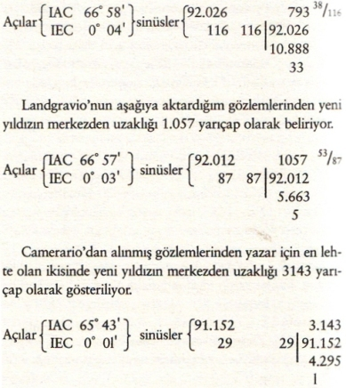

| Landgravio | } | Kutup yüksekl. | } | 51˚ 18’ | ´ yüksekl. | 79˚ 30’ |
| Gemma | 50˚ 50’ | 79˚ 45’ |
Diğer ikisi de aşağıdadır:
Şu ana kadar sizlere gösterdiklerimden, yeni yıldızın yerini Ay-berisine almak amacıyla yapılan araştırmada, yazar tarafından kullanılan bu ilk yöntemin umduğu amaca hizmet etmediğini ve edinilen bilgilerin, yeni yıldızı göğün en uzağındaki sabit yıldızlar arasına konduracak uzaklıkta olduğunu ortaya koyduğunu gördünüz.
Simplicio – Şu ana kadar açıkça belli oldu sanırım yazar tarafından uygulanan kanıtlamaların ne kadar yetersiz olduğu; fakat bu konudaki bilgiler için kitabın ancak birkaç sayfası karıştırıldı, gördüğüm kadarıyla ve bu yüzden de olabilir ki kitabın başka bölümlerinde şimdikilerden daha ikna edici gerekçeler bulunabilir.
Salviati – Eğer incelemiş olduğumuz sayfalar daha sonraki sayfalar için bir örnek oluşturacaksa o takdirde diğer sayfalardaki bilgileri daha az geçerli saymalıyız. Nitekim (açıkça anlaşıldığı üzere) incelediklerimizin belirsizliği ve ikna başarısızlığından belli oluyor ki hatalar gözlem gereçlerine bağlı bulunuyor: Kutupyıldızı ve yeni yıldıza ait gözlemlerdeki ölçümlerin doğru dürüst yapıldığı sanılırken aslında kolaylıkla yanlışa düşüldüğü görülüyor. Oysa Kutupyıldızı yüksekliklerini saptamak için astronomların yüzyıllardır bir yığın zamanları olmuştur ve aheste beste ölçümler yapabilmişlerdir ve yıldızın meridyendeki yüksekliklerini gözlemlemek en kolay yapılan işlemlerdendir, sınırlarını belirleyici kesin nirengi noktaları sunması nedeniyle ve araştırmacıya gözlemlerini sürdürme imkânı verirler: Çünkü meridyende sınırları kısa zamanda değişmez; oysa meridyenden uzaktaki yıldızlar bu imkânı sağlamazlar. Eğer bu söylediklerimiz doğruysa ki tamamen doğru, biz gözlem yapılması daha zor, anlık değişimler sunan, bu nedenle de daha çok sayıda gözleme ihtiyaç gösteren gökcisimlerine dayalı hesaplamalara nasıl güven duyacağız, üstelik aldatıcı ve rahat olmayan araç gereçlerle? Daha sonraki gözlemlere şöyle bir göz attım, gördüm ki yıldızın birçok dikey çemberdeki yüksekliklerine göre yapılmış bulunuyor hesaplamalar: Araplar’ın azimut[128] dedikleri dikey çemberlerde bu tür gözlemlerde yalnızca mobil gereçler kullanmakla yetinilmiyor, aynı süre içinde ufuk gözlemleri de yürütülüyor; öyle ki yükseklik ölçümü yapıldığı o anda ufukta da yıldızın dahil bulunduğu dikey çemberin meridyenden uzaklığı gözlenmiş oluyor. Ayrıca epeyce bir süre sonra işlemi tekrar etmek gerekiyor ve geçen süre dakikası dakikasına hesaplanmalıdır, ya dakikaları saptayan gereçlerle ya da yıldızların başka yollardan izlenmesi yöntemiyle. Böylesi bir gözlemler yumağı, diğer bir gözlemci tarafından başka bir ülkede başka bir gereçle ve değişik zamanda yapılan ölçüm birikmeleriyle karşılaştırılıyor ve bunlardan yazar, yıldızın yüksekliklerinin ve ufuk enlemlerinin diğer ilk gözlemler sırasındaki hangi saatlerde ne olmaları gerektiğini bulmaya çalışıyor. Artık bunun takdirini size bırakıyorum böylesi araştırmalardan çıkan sonuçlara ne derece güven duyulabileceğini. Sonra benim hiç kuşkum yok ki çok girift hesaplarla kendisine işkence yapmak istese bile yazar, daha öncekilerde olduğu gibi bundan sonraki sayfalarda da kendi lehine değil de rakip taraf lehine şeylerle karşılaşacaktır: Fakat bizim anlayabileceğimiz esaslı şeyler arasına giren şeyler olmadığı için bunlar, böyle bir zahmete girişmeye gerek yok.
Sagredo – Ben de sizin kanaatinizi paylaşıyorum; madem ki bu işin içinde bunca belirsizlikler, karışıklıklar ve hatalar var, bu kadar çok sayıda astronom nasıl oluyor da ve neye dayanarak yıldızın bu denli yüksekte olduğuna dair ciddi ciddi açıklamada bulunuyor?
Salviati – İki tür gözleme dayanıyorlar; çok sade, çok kolay ve tamamen gerçeğe uygun. Bunlardan yalnızca biri, yıldızın, göğün çok yüksekliklerinde olduğundan ya da en azından epey uzun süre Ay-ötesi yüksekliklerde olduğundan emin kılmaya yeterlidir. Bu gözlem, yeni yıldızın Kutupyıldızı’ndan olan uzaklıklarının eşitliğine, daha doğru ifadeyle azıcık olan farklılığına, gerek yıldız meridyenin en alt gerekse en üst bölümdeyken olan farklılığına dayanmaktadır, öbür tür gözlemde yeni yıldızın bazı komşu sabit yıldızlardan ve özellikle Koltuk takımyıldızının on birincisinden hep aynı mesafeleri korumasına dayanmaktadır ki ondan uzaklığı 1,5 dereceden 30’dan fazla değil: Bu iki temel kaynaktan kesin olarak ya paralaks yokluğu ya da küçük bir paralaks varlığı öğrenilmiş oluyor; bu öyle bir küçüklük ki çarçabuk bir hesapla yeni yıldızın Yerküre’mizden çok uzak olduğu anlaşılıverir.
Sagredo – İyi de, dediğiniz bu şeyleri yazar anlayamamış mı? Eğer bu dediklerinizin farkındaysa kendini nasıl savunuyor?
Salviati – Şunu söyleyebiliriz ki insanlar hatayı örtecek çare bulamayınca pek havadan sudan mazeretler arıyorlar ve gökten sallandırılmış iplere sarılmaya başlıyorlar; fakat bu yazar az önce sözünü ettiğim iki noktayı incelemeyi sürdürürken açıkça görüldüğü gibi iplere değil de havada kurulan örümcek ağlarına sarılmaya çalışıyor. İlk olarak şunu söyleyeyim ki gözlemcilerin Kutupyıldızı’na ait teker teker gösterdikleri mesafeleri ben çarçabuk hesaplamalarla not ettim; bunların daha iyi anlaşılması için önce şunu açıklayayım: Yeni yıldız ya da başka bir meçhul gökcismi şayet günlük dönme hareketine kutup etrafında katılıyor olsa meridyenin alt bölümlerinde olduğunda, Kutupyıldızı’ndan daha çok uzaklaşmış görülür; meridyenin üst bölümlerindeyse Kutupyıldızı’na daha yakın görünür, şekildeki gibi.
Şekil 19- Yeni yıldızın Ay-ötesinin çok yükseklerinde oldu€u, yıldız meridyenin aşa€ı ve yukarı bölümlerinde bulunmasına göre Kutupyıldızı’na eşit miktarda uzak oluşundan ya da şöyle diyelim, uzak oluşunun pek az fark edilir eşitsiz durumundan anlaşılır. T harfi Yerküre’nin merkezini gösteriyor; O harfi de gözlemcinin bulundu€u yeri. Yeni yıldızın Ay-ötesi yüksekliklerde oluşunun di€er belirtisi de sabit yıldızlardan bazılarına olan uzaklı€ını hep aynen korumuş bulunmasıdır, özellikle de Koltuk takımyıldızının on birinci yıldızına uzaklı€ını 1.5 derece olarak korumasıdır. Şekilde P harfi Kutupyıldızı’nı gösteriyor.
Buradaki T noktası Yerküre’nin merkezini ifade ediyor olsun. O harfi de gözlemcinin yerini, VPC yayı da gökyüzünü, P ise Kutupyıldızı’nı. Gökteki cisim, FS çemberinde hareketli durumda, bir o tarafta OFC ışın hattında Kutupyıldızı’nın aşağı tarafında, bir burada OSD ışın hattında Kutupyıldızı’nın yukarı tarafında görülecektir: Öyle ki gökyüzünün derinliğinde görülen D ve C noktalarıdır. Ne var ki Yerküre’nin T merkezine göre gerçek noktalar, B ve A olup bu iki nokta Kutupyıldızı’nı gösteren P noktasına eşit uzaklıktadırlar; burada belli olan şey S cisminin sözde yerinin yani görünür yerin yani D noktasının Kutupyıldızı’na yakınlığının, OFC boyunca bakılan görünür yerine kıyasla daha fazla oluşudur: Bu durum not edilmesi gereken ilk durumdur. İkinci olarak not edilmesi gereken, Kutupyıldızı itibariyle, aşağı bölümdeki görünür mesafenin, yukarı bölümdeki görünür mesafeye göre fazlalığının, aşağı bölümdeki paralaksdan büyük oluşudur; yani diyorum ki CP yayı büyüklüğünün PD yayına (yukarı bölümdeki görünür mesafe) göre fazlalığı CA yayından çoktur (aşağı bölüm paralaksı). Bunu anlamak da zor olmasa gerek. Şöyle ki CP yayının PD’den fazlalığı PB’den fazlalığından daha büyüktür çünkü PB elbet PD’den büyüktür; fakat PB eşit PA’dır. Ve CP’nin PA yayına kıyasla fazlalığı CA yayı kadardır. Demek ki CP yayının PD yayından fazlalığı CA yayından büyük olup CA yayı F’deki cismin paralaksıdır ve işte bilinmesi gereken her şey bundan ibarettir. Şimdi yazara tüm avantajları tanımak için diyelim ki F noktasındaki yıldızın paralaksı CP yayının (yani kutuptan olan alt bölüm mesafesi) PD’ye karşı (üst bölüm mesafesi) fazlalığının tamamı kadar olsun. Şimdi yazar tarafından öne sürülen tüm astronom gözlemlerini inceleyeceğim: Bunlar arasında yazarın aleyhine olmayan ve onun amacına ters düşmeyen tek bir tane bile yok. Buschio’nun gözlemleriyle başlayalım. Buschio yeni yıldız Kutupyıldızı’nın üst bölümündeyken yıldızın Kutupyıldızı’ndan mesafesini 28˚ 10’ olarak bulurken, alt bölümünde bulunduğu sırada 28˚ 30’ olarak bulguluyor: Böylece fazlalık 0˚ 20’ olarak beliriyor. Bunu yazar lehine alalım istiyorum, yıldız F noktasındayken, tümü de sanki paralaksmış gibi yani TFO açısı; sonra, en yüksekteki CV yayından uzaklık derece 67˚ 20’dır. Bu iki şeyi bulduktan sonra CO doğrusu uzatalım ve buna TI dikmesini çizelim ve TOI üçgenini ele alalım. TOI üçgeninin I açısı dikaçıdır ve IOT de VOC açısının tepesinde olması nedeniyle biliniyor: VOC yıldızın zirveden olan mesafesidir; ayrıca TIF üçgeninde, ki bu da dikaçılı bir üçgendir, F açısı, paralaks olarak alındığında, bilinen bir açıdır. IOT ve IFT açıları not edilerek bunların sinüslerini alalım. Bunlar şöyledir: IOT üçgeni kısımlarından TO’nun tümü sinüs olarak 100.000’dir, bunlardan TI sinüsü 92.276 ve üstelik IFT üçgeninin TF’si tüm sinüs olarak 100.000’dir; TI sinüsü bunların 582’si kadar eder. TO’nun 100.000’ininden TF ne kadarıdır diye bulmak için temel kural uyarınca şöyle sonuçlandıracağız: TI 582 iken TF 100.000’dir; fakat TI 92.276 olursa TF kaç olur? 92.276’yı 100.000’le çarpalım; çıkan sayı 9.227.600.000 ve bu da 582’ye bölünmelidir. Verdiği sayı, görüldüğü gibi 15.854.982 ve TO’da 100.000 olan şeylerden TF’de o kadar parça var demek olacaktır. Böylece TF’de kaç adet TO çizgisi bulunduğunu öğrenmek istersek 15.854.982 sayısını 100.000’e böleceğiz; ortaya çıkacak sayı yaklaşık 158,5 olacaktır ki bunun anlamı F yıldızının T merkezinden mesafesinin bu kadar yarıçap olduğudur, işlemi kısaltmak için şöyle düşünelim: Biz 92.276’yı 100.000’le çarpıp elde ettiğimiz sayıyı önce 582’ye bölüp çıkanı da 100.000’e böldüğümüze göre başka bir yol izleyebiliriz ve 92.276’yı 100.000’le çarpmaya hiç başvurmadan yalnızca sinüs sayısı 92.276’yı sinüs sayısı 582’ye bölüp hemencecik aynı sonuca ulaşabiliriz, aşağıda da gösterildiği gibi; burada 92.276’yı 582’ye bölünce aynen 158,5 sayısına ulaşırız. Aklımızda tutmamız gereken şey yalnızca TI sinüsünü (TOI açısının sinüsü olarak) TI sinüsüne (IFT açısının sinüsü olarak) bölünce bizim aradığımız TF mesafesinin TO yarıçapı adedi olarak verir.
Şimdi de Peucero’nun[129] gözlemlerinin verdiği sonuçları görelim: Kutuptan mesafe olarak alt bölüm için dereceyi 28˚ 21’ olarak veriyor ve üst bölüm için de dereceyi 28˚ 02’ veriyor. Aradaki fark 0˚ 19’ ve zirve yükseklikten olan mesafe derece 66˚ 27’; bunlardan elde edilen bilgilerle yeni yıldızın Yerküre merkezinden mesafesinin 166 yarıçap olduğudur.
Şimdi de Tycho’nun gözlemlerinin verdiği sonuçları açıklayalım. Bunlar rakip taraf için daha elverişli kabul ediliyor; şöyle ki kutuptan olan aşağı mesafe derece 28˚ 13’ ve üst mesafe 28˚ 02’, aradaki fark 0˚ 11’, sanki tümü paralaksmış gibi. Zirve yükseklikten mesafe derece 62˚ 15’dır. İşlem aşağıdadır ve yeni yıldızın merkezden uzaklığı 276 ve 9/16 yarıçap:
Reinhold’un[130] aşağıdaki gözlemleri yeni yıldızın merkezden uzaklığını 793 yarıçap olarak veriyor.

Munosio’nun gözlemi paralaks vermiyor ve bu nedenle de yeni yıldızı çok yükseklerdeki sabit yıldızlar arasına konduruyor; Ainzelio’nun gözlemleri sonsuz enginlikte gösteriyor fakat 1,5 dakikalık bir düzeltmeyle sabit yıldızlar arasına yerleştirmesi mümkün oluyor. Aynı sonuç Ursino’nun gözlemleriyle de elde ediliyor fakat 12 dakikalık bir düzeltmeyle. Diğer astronomlar Kutupyıldızı’nın üst bölümünde ve alt bölümünde diye mesafeler vermediklerinden onların gözlemlerinden herhangi bir şey elde edilemiyor. Artık görmüş oldunuz, tüm astronomların gözlemleri yeni yıldızı gökyüzünün çok yüksek bölgelerine yerleştirmekte nasıl uyuşuyorlar.
Sagredo – Böylesine ayan beyan belli zıtlıklar karşısında yazar ne diyor?
Salviati – Pamuk ipliğinden zayıf gerekçelerden birini öne sürerek; yazar kırılma olgusundan ötürü paralaks miktarları küçülüyor iddiasını öne sürüyor. Gökyüzündeki cisim üzerinde kırılma olgusu ters etki yaparak cismi çok daha yükseklerde gösteriyor, paralaks belirlemelerinin alçakta göstermesine karşılık diyor. Bu gibi zavallıca bahanelerin ne denli değer taşıdığını şuradan anlayabilirsiniz ki şayet bu kırılmaların etkisi bazı astronomların kısa bir süre önce ortaya atmaya başladıkları kadar fazlaysa ve ufuktaki bir cismi gerçeğinden daha yüksekte gösterecek gibiyse cisim 23 ya da 24 derece yüksekte olduğu takdirde paralaksın ancak 3 dakikalık küçülme yapmasına neden olabilir; bu da cismi Ay-berisinde göstermeye yetecek bir paralaks küçülmesine neden olmaz ve bazı durumlarda bu küçücük miktar, bizim ona tanıdığımız avantaj olan Kutupyıldızı’ndan aşağı bölgedeki uzaklık miktarının yukarı bölgedekinden fazlalığının tümünün paralaks kabul edilmesi avantajına göre önemsizdir. Bizim ona verdiğimiz bu ödün, yazara kırılma olgusundan umduğu medetten daha büyük avantajdır. Kaldı ki ben kırılma olgusunun yapacağı etkinin büyük olacağına da inanmıyorum ve duyduğum kuşku da boşuna değildir, üstelik ben bu yazara şunu sormak isterim: Acaba çalışmalarından yararlandığı o astronomların kırılmanın etkilerini bildiklerine ve bu olgu üzerinde iyice durup durmadıklarına inanıyor mu? Eğer biliyorlarsa ve üstünde durdularsa yıldızın gerçek yüksekliklerini ölçmek için bunları hesaba kattıklarına ve aygıtlar üzerinde görülen yükseklik derecelerinden kırılmanın getirdiği değişiklikleri gerçek ve doğru mesafeleri bulmak üzere hesaptan düştüklerine inanmamız gerekir. Fakat siz, o gözlemcilerin söz konusu kırılmalar üzerinde kafa yormadıkları kanaatindeyseniz onların kırılmaları hesaba katmadan yaptıkları işlemlerde hatalı oldukları kabul edilmelidir. Gözlemcilerin yapmaları gereken işlemlerden biri, Kutupyıldızı yüksekliklerinin tam ve kesin olarak alınmasıdır ki bu yükseklikler genellikle görünür durumda olan bazı sabit yıldızların iki meridyen yüksekliklerine dayanılarak ölçülür. Kırılma bu yükseklikleri değiştirme etkisi yapacağı gibi aynı şekilde yeni yıldız için de değişiklik etkisi yapacaktır. Şöyle ki Kutupyıldızı yüksekliği ölçümlerinin dayandığı unsurlar hatalı olunca Kutupyıldızı’na ait ölçüm de hatalı olacaktır; böylece yazarın yeni yıldıza yakıştırdığı ölçümler de hatalı olduğundan o yıldız da bu yıldızların gerçekte olduklarından daha yükseğinde olacaktır. Fakat bizim konuyu ele alışımızda yazarın o hataları bizi hiç etkilemez çünkü bizim ihtiyacımız olan bilgi yalnızca yeni yıldızın, Kutupyıldızı’nın bir alt yanında bir de üst yanında olduğu zamanki iki mesafe arasındaki farkı bilme ihtiyacından başka bir şey değildir. Kırılma olgusunun şayet etkisi varsa hem Kutupyıldızı hem de yeni yıldızla ilgili olarak etkisi aynı olacağından sonuçta hiç farka neden olmaz her ikisi için de aynı olan bir etki. Yazarın iddiası belki bir önem taşıyabilirdi, o da çok zayıf bir önem olmak şartıyla, eğer Kutupyıldızı yüksekliği kırılmadan ötürü doğabilecek değişiklik göz önünde tutularak kesin bir veriye dayandırıldı diye bir uyarıda bulunmuş olsaydı; ölçüm yapan astronomlar hesaplamalarında önlem alırlardı. Fakat yazar böyle bir durumdan söz açmadığı için bizi bu noktada emin kılmamıştır ve belki de emin kılamazdı, ola ki (bu söylediğim ihtimal daha da inanılır bir ihtimaldir) böyle bir uyarıyı gözlemciler duymazlıktan gelirlerdi.
Sagredo – Yazarın iddiası artık cevaplanmaya gerek kalmayacak şekilde iptal edilmiş sayılır ama merak ediyorum, yazar yıldızın komşu sabit yıldızlardan uzaklığını hep aynı mesafede korumuş olmaktan kendini nasıl affettirebiliyor acaba?
Salviati – Pamuk ipliğinden daha da çürük iki ipe tutunarak. Bunlardan biri, yine kırılma olgusuna ilişkin ve fakat çok zayıf bir tutunma oluyor çünkü şöyle diyor: Kırılma olgusu yeni yıldızı etkileyip onu gerçek yerinden daha yükseklere çıkararak görünür mesafelerini, komşusu sabit yıldızlara göre gerçekleriyle kıyaslanamayacak kadar belirsizleştiriyor; bir de şu düşüncesine şaşmaktan kendimi alamıyorum: Nasıl olur da aynı kırılma olgusunun aynı şekilde hem yeni yıldızda hem de komşusu eski yıldızda etki yapacağını, aynı etkiyle her ikisini yükseklerde göstereceğini ve aralarındaki mesafe farkının böylece hiç değişmeyeceğini akıl edemiyor? Sığındığı ikinci bahanenin daha da talihsiz ve gülünç tarafı var. Sığındığı şey aygıt kullanımından doğabilecek hatayla ilişkili sözleri. Yazar gözlemcinin gözbebeği merkezini sekstant’ın eksenine (iki yıldız arasındaki mesafeleri ölçen aygıt) yerleştirme zorluğundan yakınıyor; sekstant’ı gözlemci gözbebeği ile avurt kemiğinin bilmem hangi girintisi arasına dayayınca sekstant’ın iki kenarının oluşturduğu açıdan daha dar bir açı oluşuyormuş gözünde. Baş oynatılmadan aygıtı kaldırarak yıldızlara bakıldığında gözlemin verdiği olumsuz sonuç boyun arkaya doğru oynatılarak kaldırılan aygıtla olumlu sonuca dönüşüyormuş. Yazar öyle bir şey söylüyor ki bununla kastettiği, gözlemcilerin aygıt kullanırken kafalarını ihtiyaca göre kaldırmadıkları noktasında toplanıyor: Böyle bir şey gerçekle hiç bağdaşmaz. Ama diyelim ki yazarın dediği gibidir durum, sormak isterim: Eşkenar iki üçgenin kenar uzunlukları 4’er arşınsa ve bu iki üçgenden birinin kenarı 4 arşından bir mercek çapı kadar eksikse bu iki üçgenin dar açılarının farkından doğacak farkın büyüklüğü ne kadar önem taşır? Bunun takdirini size havale ediyorum. Şurası muhakkak ki gözbebeğinin merkezinden sekstant borusunun düzlemine dikey olarak bir hat çekildiğinde, ki bu çizgi bir başparmaktan daha büyük değildir, iki vizüel ışının uzunluğu ile gözlemcinin başını oynatmadan sekstantı yükseltmesiyle çekilen çizgi, sözü edilen düzleme artık dikey olmayıp eğik ineceğinden ve daire çevresine epey dar açıyla kavuşacağından, aynı vizüel ışınların uzunluğu arasında ki fark büyük olamaz. Fakat yazarın bu gibi talihsiz bocalamalardan tamamen kurtulması için şunu söylemeliyim ki (astronomi gözlemlerinde fazla deneyim sahibi olmadığı anlaşılıyor) sekstant’ın ya da rub’un (gökcisimleri ile ufuk çizgisi arasındaki açıyı ölçen çemberin dörtte biri üzerine oturtulmuş aygıt) kenarlarına iki nişangâh yerleştirilmiştir; bunlardan biri merkez bölümündedir, diğeriyse karşı uçtadır. Her ikisi de boru düzleminden bir parçacık yani başparmak yüksekliğini geçmeyecek kadar yüksektedir, bu nişangâhın tepe bölümünden göz ışını geçer ve göz de aygıttan bir karış kadar uzak tutulur; öyle ki ne gözbebeği ne avurt kemiği ne de insanın başka herhangi bir organının aygıta değdiği yok. Sonra, bu aygıt elde kolda tutulmaz çünkü genellikle büyük olanları kullanılır gözlemlerde; bunlar on, yüz, hatta bin libre ağırlığında olduğundan çok sağlam dayanaklar üstüne oturtulurlar: Böylece yazarın iddiası toptan ortadan kalkmış oluyor. İşte bunlar yazarın sığındığı bahaneler olup bu bahanelerin tümü çelik kadar sağlam malzemeden yapılmış olsalar bile yazarı dakikanın yüzde biri kadar yükseğe kaldırmaya yetmez. Oysa yazar 100 dakikadan fazla bir farkı kapatabileceğimize inanmamızı istiyor. Yani şunu diyorum ki yeni yıldız ve sabit bir yıldız arasında döngülerinin tümü sırasında, göze çarpan bir uzaklık farkı gözlenmemiştir. Eğer yeni yıldız Ay yakınlarında olmuş olsaydı hiçbir aygıta ihtiyaç duyulmaksızın epey belirgin olarak göze çarpardı ve özellikle de yeni yıldızın komşusu olan, 1.5 derecelik komşusu, Koltuk takımyıldızının on birinci yıldızıyla kıyaslanmasıyla belli olurdu. Zaten bu durumda yeni yıldızın Ay çapının iki misli kadar fark yaratması gerekirdi, zamanımızın güvenilir astronomlarının belirttikleri gibi.
Sagredo – Fırtına yüzünden umduğu ve bel bağladığı güzel hasatların mahvolması karşısında boynu bükük yürüyerek tarladan ancak bir günlüğüne bir civcivi besleyecek kadar az kalan buğday tanelerini toplayan yüzü asık talihsiz çiftçiyi görür gibi oluyorum şimdi.
Salviati – Gerçekten bu yazar pek az silah ve cephaneyle saldırıya geçmiş rakiplerine karşı; nitekim gökyüzünün değişmezliği fikrine karşı çıkanlarla mücadelesinde hazırlıksız olduğu belli oldu ve çok yükseklerden, Koltuk takımyıldızı yakınlarındaki yükseklikten aşağı çekmeye çalıştığı yeni yıldızı pek cılız zincirlerle çekmeyi denemiş. Yeni yıldız konusunda o astronomları harekete geçiren motivasyonla onlara karşı koyan bu yazarın niyeti arasındaki büyük fark artık belirlendiğine göre bu tarafı kendi haline bırakarak asıl konumuza dönsek iyi olacak. Asıl konumuzu ilgilendiren görüş, genellikle Güneş’e yakıştırılan yıllık hareketin sonradan Sisamlı Aristarkhos ve Copernicus tarafından Güneş’ten alınıp Yerküre’mize devredilmesidir; bu sözlerime karşı çıkmak üzere iyice teçhizatlanmış Bay Simplicio’nun şahlanışını hissediyorum. Kılıç kalkan olarak Tezler Kitabı ile matematik notlarını getiriyor. Meydan okumaya başlaması iyi olur sanırım.
Simplicio – Eğer izin verirseniz bunları sona saklamak istiyorum çünkü henüz yeni bulduğum belgeler bunlar.
Salviati – Bu durumda siz, Aristoteles ve diğer eski düşünürlerin aleyhteki görüş ve gerekçelerini, şu ana kadar yaptığınız gibi öne sürmeye devam edin. Zaten ben de aynı yöntemi izleyeceğim ki böylece titizlikle incelenmedik bir konu kalmasın; Bay Sagredo da zekâsının canlılığıyla ilgi duymaya başladığı anlarda fikirlerini ortaya koysun.
Sagredo – Ben her zamanki gibi içimde duyduğum serbestiyle yapacağım; ama madem ki siz böyle emrediyorsunuz, artık müdahalelerimi affetmek zorunda kalacaksınız.
Salviati – Yapacağınız müdahaleler, bizi size teşekküre borçlu kılacak, affetmeye değil. Fakat artık Bay Simplicio, Yerküre’nin, diğer gezegenler misali durağan bir merkez etrafında dönmelerine benzer hareketle dönebileceğine inanmaya engel olan zorlukları açıklayarak başlasın söze.
Simplicio – İlk ve en büyük zorluk bir cismin hem merkezde olması hem de oradan uzakta bulunması çelişkisidir: Çünkü her şeyden önce, Yerküre bir yılda bir çemberin çevresi boyunca yani zodyak işaretleri altında dolanırken, aynı anda zodyakın merkezinde bulunması imkânsızdır; ne var ki Yerküre’nin bu merkezde bulunduğu birçok vesileyle Aristoteles tarafından, Batlamyus ve diğerleri tarafından kanıtlanmıştır.
Salviati – İyi düşündünüz; hiç şüphe yok, her kim ki Yerküre’yi bir dairenin çevresi boyunca harekete geçirmek isterse her şeyden önce Yerküre’nin o dairenin merkezinde olmadığını kanıtlaması gerekecektir. Bunun sonucu olarak bizim şimdi Yerküre’nin o merkezde olup olmadığına bakmamız gerekir ki ben bu merkez etrafında döndüğünü söylüyorum, oysa siz dönmediğini, o merkezde durduğunu ifade ediyorsunuz. Bizim buna cevap vermeden önce bu merkez hakkında sizin ve benim aynı kavramı paylaşıp paylaşmadığımıza bakmamız gerekir. Bu nedenle lütfen söyleyiniz sizin zihninizdeki bu merkez nerededir ve nedir?
Simplicio – Merkez olarak ben, Evren’in merkezi, Dünya’nın merkezi, yıldızlı kürenin merkezi, gökyüzünün merkezi diye düşünüyorum.
Salviati – Ben çok haklı olarak sizi bir tartışma içine çekebilirim doğada böyle bir merkez var mı diye; çünkü ne siz ne de başkaları Evren’in sınırlarının bitimli ve belirli şekilli mi ya da sonsuz ve sınırsız mı olduğunu kanıtlamış değildir; bununla beraber şimdilik bitimli ve küre şekliyle sınırlı olduğunu kabullenerek ve bu nedenle de bir merkezi bulunduğunu ifade ederek bu merkezde başka bir cisim değil de Yerküre’nin bulunduğu ne derece inandırıcıdır diye bakmak gerekir.
Simplicio – Evren’in bitimli ve küre şekliyle sınırlı olduğunu Aristoteles yüz kanıtla göstermiştir.
Salviati – Tüm bu söyledikleriniz sonuç itibariyle bir tek noktaya indirgeniyor ve o tek nokta da bir hiç demek oluyor, çünkü ben onun varsayımını reddedersem yani Evren’in hareket ettiğini reddedersem onun tüm kanıtları hükümsüz kalır; çünkü Aristoteles ancak primum mobile’nin hareket ettirdiği bir Evren için bitimli ve sonlu bir durumu savunuyor. Fakat tartışma konularını çoğaltmamak amacıyla şimdilik Evren’in bitimli, küre biçimli ve bir merkezi olduğunu kabullendim ve madem ki bu şekil ve merkez hareketli bir Evren kabul etme varsayımına dayandırıldı, bizim Evren’deki gökcisimlerinin dairesel hareketlerini incelemek suretiyle o merkezin asıl yerini araştırmaya yönelmemiz akıllıca bir yöntem olur. Aristoteles’in kendisi aynı yoldan fikir yürüterek, göksel kürelerin etrafında dolandıkları şeyi Evren’in merkezi kabul etti ve bu merkeze arzın yani Yerküre’nin yerleştirilmiş olduğu kanaatine vardı. Şimdi söyleyin bana Bay Simplicio, Aristoteles açık seçik deneyler karşısında Evren’in düzeni ve düzenlenişi hakkında kısmen fikir değiştirmek zorunda kalsa ve şu iki şıktan birinde aldandığını itiraf etmek zorunda olsa yani ya Yerküre’yi merkeze kondurmak ya da gökkürelerinin bu merkez etrafında döndükleri önermesinde bir tercih yapması gerekse bu ikisinden hangisini seçerdi?
Simplicio – Böyle bir durum belirseydi eğer, peripatetikçiler...
Salviati – Ben peripatetikçilere sormuyorum, Aristoteles’in kendisine yöneltiyorum soruyu. Çünkü peripatetikçiler ne cevap verirlerdi biliyorum. Onlar Aristoteles’in boynu eğik saygılıları olarak, dünyadaki tüm deneyleri ve gözlemleri red ve inkâr ederler ve itirafa yanaşmamak için bu deneylere tanık olmaktan bile kaçınırlardı ve Evren Aristoteles’in yazmış olduğu gibidir, doğanın istediği gibi değildir, derlerdi. O büyük otorite, ayaklarının altından çekilince sahaya hangi güçle çıkabilirler ki? Siz bana yine de Aristoteles’in kendisinin cevabı ne olurdu onu söyleyin.
Simplicio – Doğrusu ya, pek karar veremiyorum, acaba ikisinden hangisini daha uygun görürdü? Uygunsuzluk açısından hangisi sineye daha kolay çekilebilirdi?
Salviati – Olması şart olan bir durum için lütfen şu uygunluk/uygunsuzluk deyimlerini kullanmayın. Uygunsuz olan, göksel devinimlerin merkezine Yerküre’yi yerleştirmeyi istemek olmuştur. Madem ki siz Aristoteles’in hangi tarafa eğilim gösterdiğine karar veremiyorsunuz, onu büyük bir deha sahibi insan kabul ederek iki seçenekten hangisinin akla daha yatkın olduğunu inceleyerek ilerleyelim ve o seçeneği Aristoteles’in kabul ettiğini sayalım. Yürüttüğümüz fikirler silsilesini yeni baştan ele alalım ve Aristoteles’in hatırı için Evren’in (sabit yıldızlar ötesindeki büyüklüğü hakkında duyularımıza hitap eden bilgiden yoksun olarak) küre şekilli olarak ve dairesel harekete sahip bulunarak, hem şekil hem hareket nedeniyle, mecburen bir merkeze sahip olması gerektiğini kabul edelim. Bundan başka yıldızlı küre dahilinde birbiri içinde birçok yörüngeler olduğundan, bunlarla birlikte yıldızlar da olduğundan ve bunlar da dairesel harekete sahip bulunduklarından emin bir durumda şunu öğrenmeye çalışıyoruz: Acaba bu yörüngeler de Evren’in aynı merkezi etrafında mı yoksa o merkezden epey uzakta bir merkezin etrafında mı dönüyorlar? Sizin bu noktadaki kanaatiniz nedir Bay Simplicio?
Simplicio – Biz yalnızca bu varsayım üstünde durabilsek ve bizi taciz edecek bir başka takıntıyla karşılaşmayacağımızdan emin olabilsek ben derdim ki zarf (ihtiva eden) ve mazruf (muhteva) hepsini ortak bir merkez etrafında dönüyor kabul etmek daha akla yakındır; birçok merkez etrafında dönüyor kabul etme şıkkına kıyasla.
Salviati – Şimdi, eğer Evren’in merkezi, gökyüzü cisimlerinin yani gezegenlerin etrafında döndükleri aynı merkezse gerçekten, muhakkak ki Evren’in merkezinde Güneş vardır: Yerküre yoktur. Yerküre olamaz, öyle ki bu yalın ve genel konudaki düşüncemize göre merkezde Güneş bulunmaktadır ve Yerküre’nin merkezden uzaklığı Güneş’e olan uzaklık mesafesi kadardır.
Simplicio – Siz gezegenlerin dönüş hareketlerinin merkezinde Yerküre değil de Güneş’in bulunduğunu hangi gerekçeye dayandırıyorsunuz?
Salviati – Belirgin ve bu nedenle de mecburen ikna edici olan gözlemlere; bu gözlemlerden bazıları Yerküre’yi merkezden alıp oraya Güneş’i koymamız gereğini sunuyor ve bu gereksinim de gezegenlerin hepsinin Yerküre’den kâh daha yakın kâh daha uzak olmalarından doğmaktadır; örneğin Venüs gezegeninin bize en yakın olduğu zamana kıyasla altı misli daha uzak bulunduğu zamanlar oluyor ve Mars gezegeni de yakın durumuna kıyasla sekiz misli fazla uzakta bulunabiliyor. Bakın bakalım, Aristoteles gezegenlerin bizden hep aynı uzaklıkta olduklarını söylemekle az mı aldanmış acaba?
Simplicio – Gezegenlerin hareketlerinin Güneş etrafında olduklarına dair belirtiler hangileridir?
Salviati – Yörüngeleri geniş en büyük üç gezegen olan Mars, Jüpiter ve Satürn’ün Güneş’le kavuşum karşıtı (kavuşumun 180 derece karşısında) yani karşı konum durumunda bulunduklarında Yerküre’ye yakın ve Güneş’le kavuşum durumundayken Yerküre’ye çok uzak olmalarına dayanarak fikir yürütüyoruz ve bu yakınlık-uzaklık o kadar çok fark ediyor ki Mars yakınken 60 kez büyük görünüyor uzakta bulunduğu zamana kıyasla. Venüs ve Merkür konusundaysa Güneş etrafında döndüklerine ilişkin kesinlik, Güneş’ten hiçbir zaman fazla uzak bulunmamaları ve Venüs’ün[131] ışıklı şekillerini, Ay’ı taklit edercesine değiştirmesinden mecburen çıkan sonuç uyarınca Güneş’in bir berisinde bir ötesinde bulunmasındadır. Ay’ı biliyoruz, gerçekten Yerküre’den hiçbir zaman ayrılamaz, nedenlerini daha sonra belirterek anlatacağız.
Sagredo – Yerküre’nin bu yıllık hareketine ait ve günlük hareketine bağlı olmayan, hayranlık uyandırıcı daha birçok şey dinleyeceğime inanıyorum.
Salviati – Yanıldığınız pek söylenemez doğrusu: Çünkü gökcisimlerinin günlük hareketine ait işleyişleri, Evren’i bize ters yönde, hızla akıyor gösterir olmaktan başka bir şey değildir ve olamaz da; fakat yıllık hareket, gezegenlerin hepsinin kendine özgü hareketleriyle birleşince beklenmedik acayiplikler yarattığından, şimdiye kadar yeryüzünün tüm büyük insanlarının dimdik tuttukları süngülerini büküp eğriltti. Fakat ilk genel değerlendirmeler konusuna dönerek diyorum ki beş gezegenin yani Satürn, Jüpiter, Mars, Venüs ve Merkür’ün gökyüzündeki dönme hareketlerinin merkezi Güneş’tir ve Yerküre’ninkinin de merkezi olacaktır eğer onu gökyüzüne çıkarmamız[132] mümkün olursa. Ay konusuna gelince, bunun Yerküre etrafında dairesel hareketi söz konusudur ve daha önce söylediğim gibi Yerküre’mizden hiç mi hiç ayrılamaz; bu nedenle de Yerküre’nin yıllık hareketi boyunca onunla birlikte Güneş etrafında dönmekten kendini alamaz.
Simplicio – Ben bu yapıyı anlamayı henüz beceremedim; belki bir şekil çizerek gösterirseniz daha iyi anlaşılabilir ve böylece bu konu etrafında daha kolay fikir yürütülebilir.
Salviati – Öyle yapalım; hatta daha çok tatmin olasınız ve aynı zamanda hayretler içinde kalasınız diye istiyorum ki siz kendiniz çizin şekli ve böylece anlamadığınıza kendinizi inandırmanıza rağmen nasıl da iyi anladığınızı görürsünüz; sadece benim sorularımı harfiyen yanıtlayarak çizebileceksiniz. Bir kâğıt ve bir pergel alın: Şu beyaz kâğıt Evren’in engin genişliğini ifade ediyor olsun ve buraya siz aklın emrettiğine uygun olarak Evren’i oluşturan kısımların dağılımını düzen içinde kayıt edeceksiniz. Önce siz, benim öğretmeme hiç gerek duymadan ve Yerküre’nin de bu Evren’e dahil bulunduğuna kesin bir gözle baktığınıza göre, isteğinize uygun olarak beğendiğiniz bir noktayı belirleyin ve Yerküre’yi ifade edecek gibi bir işaret ya da harf koyun bu noktaya.
Şekil 20- Şeklin merkezinde Güneş O harfiyle gösteriliyor. Yörüngeler, sırasıyla Merkür, Venüs, Yerküre, Mars, Jüpiter, Satürn. Dikkat ederseniz Yerküre’ye ayrıca bir daire çizilmiştir. Bu küçük daire, uydumuz olan Ay’ın Yerküre etrafındaki dönüşünü anlatıyor. Beşinci gezegen Jüpiter’in etrafındaki daireler de Galileo tarafından teleskopla keşfedilen Jüpiter’in dört uydusunu gösteriyor.
Simplicio – Burayı A harfiyle işaretliyorum ve burası Yerküre olsun.
Salviati – Tamam, oldu. İkinci olarak sizin çok iyi bildiğinizi biliyorum ki Yerküre, Güneş’in bünyesinde yer almış değildir; ne de Güneş’e bitişiktir ve fakat Güneş’in bir miktar uzağındadır; bu nedenle Yerküre’mizin dışında bir yerde olmak şartıyla, istediğiniz herhangi bir yerde bulunduğunu göstermek üzere Güneş’i işaretleyin.
Simplicio – İşte işaretledim: Güneş de şurada O işaretiyle gösterildi.
Salviati – Bu ikisini yerleştirdikten sonra Venüs’ü, durumunu ve hareketlerini, bizlere sunduğu görünürlüğüne uyan bir şekilde yerleştirelim ve bu nedenle daha önceki konuşmalarımızdan ya da kendi gözlemlerinizden bu yıldızda beliren halleri zihninizde toparlayarak ona uygun göreceğiniz bir yer verip işaretleyin.
Simplicio – Venüs’ün sunduğu görüntülere ait olarak sizin anlattıklarınızın ve benim Tezler Kitabı’nda okuduklarımın doğru olduğu kabul edilirse yani bu yıldızın Güneş’ten 40 dereceden fazla hiç açılmadığı göz önünde tutulursa ve böylece Güneş’le hiçbir zaman kavuşum karşıtı duruma gelmediği hatta dördün durumuna ve hatta altıda birlik duruma bile geçmediği hesaba katılırsa; üstelik bir seferinde diğer seferinden kırk misli kadar büyük göründüğü, Güneş’le akşam kavuşumunda çok büyük göründüğü, sabah kavuşumunda küçük göründüğü; büyük göründüğü zaman boynuz şekilli, küçük göründüğü zaman yuvarlak olduğu göz önünde bulundurularak şunları kabul etmekten kaçınamam: Bu yıldız Güneş etrafında bir çember çizerek dolanıyor. Bu dolanım çemberi Yerküre’yi kucaklıyor olamaz. Alt-kavuşum durumuna giremesinden başka üst-kavuşuma da ulaşamaz. Böyle bir çember Yerküre’yi kucaklayamaz, çünkü kucaklıyor olsa bazen Güneş’le üst-kavuşuma ulaşırdı; alt-kavuşuma da giriyor olamaz, çünkü o takdirde iki kavuşum arasında boynuz şekilli görünürdü. Üst-kavuşuma ulaşıyor olsaydı her zaman yuvarlak görünürdü ve hiçbir zaman boynuz şekilli görünemezdi. Böylece Venüs’ü Güneş etrafında CH dairesine yerleştiriyorum ve Yerküre’yi kucaklayamaz durumda işaretliyorum.
Salviati – Venüs’ü yerleştirdiğinize göre şimdi Merkür’ün yerini işaretlemeye çalışın; biliyorsunuz Merkür hep Güneş’in etrafında kalır, ondan uzaklaşmaz ve Venüs’ün Güneş’ten uzaklığına kıyasla Merkür’ünki çok daha azdır. Bunu göz önünde tutarak Merkür’ün yerini de belirleyin.
Simplicio – Şüphe yok ki Venüs’ü taklit eden Merkür, Venüs’ün dairesinin içinde bir daireye sahip gösterilebilir, çünkü Merkür’ün Güneş’e yakınlığına, onun parlaklığının Venüs’ten de ve diğer gezegenlerden de fazla oluşu bir belirti sağlamış oluyor. Bunlara dayanarak Merkür gezegeninin Güneş etrafındaki dairesini BG harfleriyle gösterebiliriz.
Salviati – Peki, Mars’ı nereye yerleştireceksiniz?
Simplicio – Mars Güneş’le kavuşum, kavuşum karşıtı durumuna geçtiğinden onun çemberinin Yerküre’yi kucaklaması gerekir: Fakat Mars mecburi olarak Güneş’i de dairesi içine alıyor ve kucaklıyor olmalıdır; nitekim Güneş’le kavuşum durumuna gelirken eğer Mars Güneş’in üstünden geçmese ve hep Güneş altı kalsa boynuzlu şekle girerdi: Venüs ve Ay’ın göründüğü gibi. Oysa Mars gezegeni her zaman yuvarlak şekilli görünür; demek oluyor ki Mars’ın çizdiği daire, Yerküre’yi olduğu kadar Güneş’i de içine alıp kucaklıyor olmalıdır. Mars’ın üst-kavuşumdayken alt-kavuşuma kıyasla altmış misli büyük göründüğünü söylediğinizi hatırlarsak, sanıyorum, bu görüntüye çok iyi uyan, Güneş etrafında dönen ve Yerküre’yi de kucaklayan bir daireyi DI olarak çizebiliriz: Burada Mars D noktasındayken Yerküre’ye çok yakındır ve Güneş’le üst-kavuşumdadır; fakat I noktasındayken Güneş’le alt-kavuşumda olup Yerküre’nin çok uzağındadır. Aynı görüntüler Jüpiter ve Satürn için de söz konusu olduğundan (her ne kadar Jüpiter’de Mars’a kıyasla daha az ve Satürn’de de Jüpiter’e kıyasla daha az söz konusuysa da) bu iki gezegeni de Güneş etrafında birer çember sahibi olarak rahatlıkla gösterebiliriz ve önce Jüpiter için EL ve onun yükseğinde Satürn için FM diye iki daire çizebiliriz.
Salviati – Şu ana kadar müthiştiniz. Bu üç büyük gezegenin (gördüğünüz gibi) yakınlaşması ve uzaklaşması Yerküre ile Güneş arasındaki mesafenin iki misli olarak belirlendiğinden bu mesafe Mars’ta daha çok fark ediyor Jüpiter’dekine kıyasla, çünkü Mars’ın DI çemberi Jüpiter’in EL çemberinden daha küçüktür; aynı şekilde, EL çemberi, Satürn’ün FM çemberinden daha küçük olduğundan benzer bir fark Satürn’de daha fazladır Jüpiter’dekine kıyasla ve bu da pundu punduna uygun düşüyor görüntülere. Şimdi Ay’a nerede yer vereceğiniz sorununa geldi sıra.
Simplicio – Ay’ın da Güneş’le iç-kavuşum ve dış-kavuşuma girdiğini gördüğümüzden aynı yöntemi izleyerek ve bu yöntemi ikna edici bularak, Ay da çizdiği çemberle Yerküre’yi kucaklıyor dememiz gerekiyor. Fakat çemberiyle Güneş’i kucaklamıyor; kucaklıyor olsa iç-kavuşum zamanına doğru hilal (boynuz şekilli) olarak gözükmezdi Ay ve her zaman yuvarlak olarak tamamı ışıkla kaplı olurdu. Hem sonra Güneş tutulmasına sebep olamazdı bizimle Güneş arasına girerek; oysa bazen Güneş tutulmasına neden oluyor Ay. Demek, Ay’ı Yerküre etrafında bir çember çiziyor kabul etmek gerek. Buna da NP çemberi diyelim: Öyle ki Ay, P noktasında bulunduğunda, A harfiyle gösterilen Yerküre’deki bizlerle ve Güneş’le aynı hizaya geldiğinde Güneş’in önünü kapayarak gölgeleyebilir ve Güneş tutulması olur. Ay N noktasına gelip bize göre Güneş’in karşısına bir duruma geçtiğinde bu defa Yeküre’mizin sebep olduğu gölgenin içine girerek karanlığa boğulur.
Salviati – Şimdi Bay Simplicio, sabit yıldızlar sorununu ne yapacağız? Onları Evren’in sonsuz enginliklerine herhangi bir belirli noktadan itibaren mi çeşitli uzaklıklara serpiştirelim yoksa küresel bir yüzeye merkezi etrafında mı yayılmış olsunlar, her biri aynı merkeze eşit mesafede bulunmak üzere?
Simplicio – Ben bir orta yol izlemek isterim ve onlara belirli bir merkez etrafında çizdikleri bir yörünge tanımaktan yanayım. Bu yörünge, biri çok yüksekteki içbükey, diğeri de aşağıdaki dışbükey olmak üzere bu küresel iki yüzey arasında değişik yüksekliklerde yer almış sayısız yıldızlar çokluğu kabul etmek isterim. Buna “Evren Küresi” adını veririz: İçinde de gezegenlerin, daha önce bizim şekilde çizdiğimiz gezegenlerin yörüngesini ihtiva etsin.
Salviati – Şu ana dek, Bay Simplicio, Evren’in cisimlerini Copernicus’un yaptığı dağılıma uygun olarak düzene koyduk ve bunu siz kendi ellerinizle yaptınız: Üstelik siz, tüm bunlara kendilerine ait hareketler tanıdınız, Güneş, Yerküre ve yıldız küresini hariç tutarak. Merkür’le Venüs’e, Güneş etrafında dönerken Yerküre’yi kucaklamaz bir durumda dönme hareketi tanıdınız; aynı Güneş etrafında fakat çizdikleri çemberler içinde Yerküre’yi kucaklar durumda büyük gezegenler Mars, Jüpiter ve Satürn’ün hareket ettiklerini söylediniz; Ay da ancak Yerküre etrafında olmak üzere hareket edebilir Güneş’i kucaklamamak suretiyle: Tüm bu hareketlerde Copernicus’la mutabıksınız. Şimdi Güneş, Yerküre ve yıldızlı küre arasında üç şeye karar vermek gerekiyor. Şöyle ki Yerküre’ye özgü gibi görünen durağanlık; zodyak altında yıllık hareketin sahibiymiş gibi gözüken Güneş ve günlük dönme hareketi ki bu da yıldızlı küreye aitmiş gibi görünüyor olup bu harekete, Yerküre hariç, Evren’in diğer tüm kısmı iştirak ettiriliyor. Ve gezegenlerin tüm yörüngeleri, demek istediğim Merkür, Venüs, Mars, Jüpiter ve Satürn’ün yörüngeleri, merkezleri olarak Güneş’in etrafında hareket ettiğine göre durağanlığın Yerküre’ye değil Güneş’e ait olması akla çok daha yakın geliyor. Hareket sahibi kürelerin durağan merkezli olmaları akla yatkın olduğuna göre bu merkezden uzak herhangi başka bir yer aramak doğru olmaz: Demek ki hareketli cisimler arasında kalan Yerküre’ye yani biri dokuz ayda diğeri iki yılda Güneş etrafındaki turunu tamamlayan Venüs ve Mars arasındaki Yerküre’ye rahatlıkla uygun görebiliriz, Güneş etrafındaki yıllık dönme hareketini Yerküre’ye ve hareketsizliği de Güneş’e uygun görerek. Böyle olduğunda bunun mecburi sonucu olarak Yerküre’ye günlük dönme hareketini de tanımak gerekiyor: Şöyle ki duran bir Güneş karşısında Yerküre kendi etrafında dönmezse ve yalnızca Güneş etrafında yıllık turunu tamamlarsa bizim bütün bir yılımız yalnızca bir gece ve bir gündüzden ibaret olurdu yani 6 ay gece, 6 ay gündüz olurdu daha önce bir vesileyle belirttiğimiz gibi. Böylece, görüyorsunuz değil mi Evren’in 24 saatte müthiş hızla dönüş yükü, Evren’in omuzlarından nasıl kolayca alınmış oluyor ve sabit yıldızlar, ki onlar da bizim Güneş gibi hepsi birer güneştir, Güneş’imize benzer biçimde ebedi bir durağanlıktadırlar. Ayrıca görüyorsunuz, bu ilk taslağımıza, gökcisimlerinin böylesi büyük belirginlikteki görüntülerine hak verdirecek karşılıkları bulmakta zorluk çekmedik.
Sagredo – Zorluk çekmediğinizi ben pekâlâ görüyorum; ama siz böylesi bir sadelikte o sistemin gerçekliği lehine büyük olasılık görürken başkaları belki tersine, aleyhte çıkarsamalarda bulunabilir ve şöyle bir şüphe duyabilirler haksız da olmayarak: Nasıl olur da, diyebilirler, ta Pythagorasçılar’ın öne sürdükleri bu yapı gökcisimlerindeki görünür olgulara bu denli iyi uyduğu halde sonradan binlerce yıllık bir süreç içinde bu kadar az taraftar toplamış ve Aristoteles zamanından beri reddedilmiş, Copernicus’tan sonra bile aynı talihsizliği yaşıyor olsun.
Salviati – Eğer siz, Bay Sagredo, bu yenilik haberlerini bırakınız onaylamayı sadece kulak kabartmaya karşı koyulması için ne kadar saçma safsatanın yetebildiğini duymuş olsaydınız, benim epey ve epey defa işittiğim gibi, sanırım bu fikrin bu denli az taraftar bulmasına şaşkınlığınız azalırdı. Fakat Yerküre’miz müthiş ağır bir cisim olması itibariyle, Güneş’in tepesine doğru nasıl tırmanırmış da oradan da cumburlop aşağı inermiş ve eğer Yerküre’miz dönüyorsa neden öğle yemeği için İstanbul’a ve akşam yemeği için Japonya’ya nakledilmiş olmuyoruz diye düşünen zihinlerin sahiplerine kanaatimce pek değer verilmemeli. Sayıları sonsuz diyebileceğimiz bu gibileri ne hesaba katmalı, ne de budalalıkları üstünde durmalı; tanımlamaya yalnızca insan türüne ait bulunması dolayısıyla giren ve kendileriyle çok ince ve hassas fikirlerde arkadaşlık kurma imkânı veren farklılıktan yoksun insanlar kazanmaya çalışmamak gerekir. Bir de şu var: Kendi çılgınca düşüncelerini idrak etmeye yeterlilik gösteremeyen bu denli tahta kafalılara dünyanın tüm kanıtlarını sunmakla kazancınız ne olabilir ki? Fakat benim hayret ettiğim Bay Sagredo, sizin hayretinizden çok değişik: Siz Pythagorasçı görüşün izinde gidenlerin bu kadar az oluşuna şaşıyorsunuz; oysa ben Pythagorasçı görüşe sarılmış ve bugüne dek peşinden gitmiş biri nasıl bulunabiliyor diye ona şaşıyorum.
Bu görüşü doğru bulup gerçek olarak kabul eden zihin açıklığına sahip insanlar, zekâlarının canlılığı sayesinde kendi duyularına öylesine gem vurmuşlar ki duyulara dayalı yaşanan deneyimler açıkça tersini sergilediği halde, aklın emrine öncelik tanımışlar. Yerküre’nin günlük dönme hareketine karşı çıkan ve tarafınızdan incelenen gerekçelerin görünürde çok doğru olduklarını gözden geçirmiş bulunuyoruz ve bu gerekçeleri Batlamyusçuların, Aristotelesçilerin ve tüm müritlerinin tam anlamıyla ikna edici bulmaları, gerekçelerin büyük etkisi hakkında fikir veriyor; fakat Yerküre’nin yıllık hareketi hakkında insanın duyularına öylesine açıkça ters gelen ve görünürdeki bu terslikleri redde o kadar çok müsait deneyimler var ki Aristarkhos’ta ve Copernicus’taki aklın nasıl olup da duyularına kelepçe vurabildiğine, duyulara olan inanırlılığı aklın zaptürapt altına sokmasına hayranlığımı anlatacak söz bulamıyorum ve bulamadığımı tekrar söylüyorum.
Sagredo – Peki, bu durumda Yerküre’nin şu yıllık hareketi aleyhine yöneltilecek cesaretli başka itirazlar olacak mı dersiniz?
Salviati – Olacaktır, hem de pervasız ve uluorta öyleleri olacaktır ki sıradan duyulara sahip kişilerdekinden daha üstün duyulu ve duyularla aklı birleştirebilen güç mevcut olmasa ben de Copernicus Sistemi’nin çok daha fazla aleyhine tavır takınmış olacabileceğim şüphesini taşıyorum; eğer olağan ışık veren lambadan daha güçlü bir lamba ışık tutmasaydı zihnime.
Sagredo – Şimdi artık Bay Salviati, gelelim sadede, çünkü bunun dışında harcanan her söz boşa harcanmış bir laf olacaktır.
Salviati – İşte hazırım size hizmetlerimi sunmaya.
Simplicio – Lütfen Baylar, bana izin verin de zihnimi sükûnete kavuşturayım çünkü Bay Salviati’nin az önce söylediklerinin beni özel biçimde etkileyişinden ötürü kendimi dalgalar arasında sürükleniyor hissettiğimden, dalgalanın dinmesini beklemeliyim ki sizin fikirlerinizi daha iyi algılayabileyim, çünkü Latin şairin çok yerinde bir ifadeyle dile getirdiği gibi dalgalı deniz iyi bir ayna oluşturmaz (nuper me in littori vidi cum placidum ventis staret mare).[133]
Salviati – Çok haklısınız, bu nedenle tüm şüphelerinizi iyice açıklayınız.
Simplicio – Son konuşmanızda bizi de biraz kalın kafalı bulmuştunuz, Yerküre’ye kendi etrafında günlük dönme hareketini tanımak istemeyenleri öyle nitelediğiniz gibi; hani şu, durup dururken dönen bir Yerküre tarafından İran ya da Japonya yöresine mi nakledileceğiz diye şüpheci davrananları demek istiyorum. Aynı şekilde Yerküre’nin Güneş etrafında yıllık hareketine karşı çıkanları da kalın kafalı buluyorsunuz. Bu gibiler, muazzam cüsseli kocaman bir cisim olması itibariyle, Yerküre’nin Güneş etrafında dönmesine, o cüsseyle nasıl yukarıya tırmanacağına ve yukarıdan da aşağı cumburlop nasıl ineceğine şaşanlardır ve ben bu gibi budalalar arasında sayılmaktan ötürü yüzüm kızarmadan da söylüyorum ki zihnim aynen onlarınki gibi sindiremiyor bu ikinci fikri yani Yerküre’nin Güneş etrafında yıllık dönme hareketini; bırakın dağı bir kenara, bir kaya parçasının bile düzlükte hareket ettirilmeye karşı koyuşunu görünce Yerküre’nin Güneş etrafında dönmek için tırmanışına ve sonra da inişine akıl erdiremiyorum. Fakat bunları hor görmeden çözüme kavuşturun lütfen ve yalnız benim açımdan değil, bu durumları idrak edemeyen ve tamamen ikna edici bulanlar için de çözümleyin bu sorunları; çünkü bir insan, ne kadar saf olursa olsun, sırf kendisini saf kabul ediyor diye böyle olduğunu kabule ve itirafa yanaşmaz.
Sagredo – Hem de ne kadar saf olursa kusurunu kabulden o kadar çok kaçınır. Bu vesileyle şunu düşünüyorum, yalnızca Bay Simplicio’yu tatmin için değil başka açıdan da daha az önemli olmayan açılardan da benzer iddiaları çözümlemekte yarar var; çünkü öyle görünüyor ki yalnızca bildiğimiz felsefe okumuş olanlarda değil, başka bilim dallarında da çok yetenekli olup ya astronomi ya matematik bilimlerinde ya da gerçeğe nüfuz etmek için zihni duyarlı kılan başka hangi eğitim dalında olursa olsun noksanı bulunanlar arasında, sözünü ettiğimiz konularda ikna edilme hatasına düşenlerin sayısı az değil: Bu nedenle zavallı Copernicus’un durumuna acıyorum. Çünkü Copernicus, görüşleri gözden geçirilirken, onun çok ince ve ince olduğu için de anlaşılması zor olan fikirlerinin yanlışlığına safsatayla inandırılmış kişilerin ellerine düşüp doğruları yanlış gibi gösterecekler ve etrafa yayacaklarla karşılaşma durumunda kalabilir. Zavallı Copernicus’un bu duruma düşmeyeceğinden pek emin değilim. Bu nedenle bu gibiler çok ince ve anlaşılması zor fikirleri idrak edemeyince diğer fikirlerin nafileliğini idrak etmelerini sağlamak gerek; böylece bunu anlayarak şimdi yanlış sandıkları doktrini yargılarken verecekleri karar bilenmiş ve keskinleşmiş olur. Bu durumda iki itirazı daha aktaracağım ama bu iki itiraz Yerküre’nin günlük hareketi hakkındadır ve bunları epey okumuş, bilgili kişilerden duydum az zaman önce. Günlük harekete karşı çıkan bu fikirleri aktardıktan sonra Yerküre’nin Güneş etrafındaki yıllık hareketi konusuna döneceğim. Duyduğum fikirlerden biri şu: Doğu ufkundan yükselen Güneş ve diğer yıldızlar değil de Yerküre’nin doğu tarafının onlar karşısında alçaldığı doğruysa onlar da hareketsiz kalıyorlarsa birkaç saat içinde doğudaki dağlar, Yerküre’nin dönme hareketi yüzünden aşağı doğru kayacağından, öyle bir durum olur ki dağ tepesine tırmanmak için az önce yukarı doğru yürümek gerekiyorken şimdi o dağ tepesine ulaşmak için aşağı doğru yürümek gerekecektir. İşittiğim diğer fikir de eğer Yerküre kendi etrafında günlük hareket yapıyor olsa dönme o kadar hızlı olur ki bir kuyunun içinden göğü izleyen biri tepesindeki yıldızı ancak bir an için görür. Yerküre çevresinin 2 ya da 3 arşınlık bölümünün hızla geçtiği süre içinde, o kısacık süre içinde, yıldızı görebilir kuyudaki biri: Kuyunun genişliği de zaten 2 ya da 3 arşındır. Fakat deneyimlerimizle biliyoruz ki yıldız, kuyu Yerküre’nin dönüşüyle kayarken, epey uzun süre görülebiliyor; bundan çıkan mecburi sonuç kuyunun ağzının, Yerküre dönüyor olsa sahip olması gereken o müthiş hızla kayıp geçmediğidir, bu nedenden ötürü de Yer hareketsiz duruyor.
Simplicio – Öne sürülen bu iki itirazdan ikincisi epey ikna edici göründü bana: Birinci itirazaysa kendim cevap verebilirim sanıyorum. Ben bu konuda şöyle düşünüyorum: Yerküre’nin kendi etrafında dönerken bir dağı doğuya doğru taşıyor olması ile hareketsiz duran bir Yerküre’den sökülen bir dağı sürüyerek taşımayı aynı şey sayıyorum ve dağı Yerküre yüzeyinde sürüyerek taşımayı, bir gemiyi deniz yüzeyi üzerinde taşımaktan farksız görüyorum. Eğer dağ konusunda yöneltilen itiraz geçerli olsa bir gemi limandan ayrılıp birkaç derecelik yolculuk yaptıktan sonra direğinin tepesine tırmanmak için yukarı doğru çıkmak değil de düz yürümek yeterli olurdu ve sonra da aşağı doğru inmek gerekecekti: Oysa böyle bir şey olmuyor ve ne de olduğuna dair bir denizciden, Yerküre’nin tüm etrafını dolanmış herhangi bir denizciden böyle bir şey işitmiş değilim. Direğin tepesine tırmanma işlemi herhangi bir farklı durum yaratmıyor, geminin şurada ya da burada bulunmasına göre.
Salviati – Pek güzel tartışıyorsunuz ve eğer o itirazı öne süren yazarın aklına, onun doğusunda bulunan dağın, Yerküre döndüğü takdirde iki saat sonra, örneğin şu anda Olimpos Dağı ya da Carmelo’nun olduğu yerde bulunması gerekirdi diye bir fikir gelse, dağın tepesine çıkmak için fiilen inmek gerekir yargısına kendi düşünce tarzının esiri olarak varmak zorunda kaldığını anlar. Bu gibilerin beyinleri, kürenin öbür yanında yere basanları akıl edemiyor ve onların ayaklar havada baş yerde yürümediklerini düşünemiyorlar. Doğru kavramlar açık seçik işte ortada; bu gerçek kavramlar onlar tarafından çok iyi bilindiği halde şüphelerini giderecek kolay çözümler üretemiyorlar. Demek istediğim, ağırlığın kendi etkisini hissettirmesi ve aşağı doğru inmek Yerküre’nin merkezine doğru meyletmektir ve tırmanmak da Yerküre’nin merkezinden uzaklaşmaktır. Yerküre’mizin öbür yanındakilerin tıpkı bizler gibi yürüdüklerini ve bizler gibi ayakta durduklarını, bir zorluk çekmediklerini, bizler gibi ayaklarının tabanıyla yere, Yerküre’nin merkezine doğru bastıklarını ve başlarını havaya doğru tuttuklarını anlamaya gelince iş, kafaları duruyor.
Sagredo – Ama yine de biliyoruz ki başka bilim dallarında yükselmiş nice kafalar böylesi durumlar karşısında şaşırıp kalmışlardır; bu durum da benim az önce söylediğimi haklı çıkarıyor yani tüm itirazları ele alıp cevaplamak gerek, bu itirazlar çok zayıf kalsa da. Fakat biz şimdi şu kuyu sorununa ilişkin itirazları yanıtlamaya başlayalım.
Salviati – Bu ikinci itiraz, görünürde ikna edici bir konu gibi geldi bana; ama yine de bu itirazı akıl eden kişiye, Yerküre’nin kendi etrafında günlük dönme hareketi karşısında söyledikleri çerçevesinde sözleri acaba ne gibi bir sonuç getirmeliydi de getirmiyor diye sorulsa inanıyorum ki muhakemeye girişerek izahat vermeye çalışırken anlamakta çektiği zorluktan daha az zora düşmezdi.
Simplicio – Doğruyu söylemem gerekiyorsa durum aynen sizin söylediğiniz gibi olur çünkü benim zihnim de halen aynı karmaşa içinde. İlk değerlendirmede konu beni köşeye sıkıştırıyor; buna karşılık bu karmaşa arasında sis perdesi arkasından görüyor gibi olduğum şey şu: Muhakeme doğru sürdürülürse Yerküre dönüyor olduğu takdirde, yıldızın geçişinde fark edilmesi gereken o müthiş hız, yıldızda, hele eğer hareket eden yıldızın kendisiyse binlerce defa daha fazla olmalıydı Yerküre’nin hızına kıyasla. Buna karşılık yıldızın görüntüsünü yalnızca kuyu ağzının geçişi süresince izleyip sonra kaçırmak demek, kuyunun ağzı çap olarak 2 ya da 3 arşın olduğuna ve kuyu Yerküre’yle birlikte saatte 2 milyon arşın kat ettiğine göre görüntünün anlık olması demektir yani yıldız görünemeden geçip gitmiş olur. Buna rağmen aynı kuyunun dibinden yıldız uzun süre görülebilir. Bu nedenle işin aslını esasını açık seçik anlamak istiyorum.
Salviati – Şimdi, ben, itiraz eden yazarın nasıl bir zihin karışıklığı içinde olduğuna iyice kanaat getirdim çünkü bakıyorum, sizin düşünceleriniz bile Bay Simplicio, bulanık ve söylemek istediğiniz şeylere hakim değilsiniz. Şuradan anlıyorum ki siz bu işte çok önemli ve başlıca nokta olan bir ayrımı ihmal ediyorsunuz. Bu nedenle söyler misiniz bana, bu deneyimde yani yıldızın kuyu ağzını geçişinde siz kuyunun az ya da çok derin olmasında fark gözetiyor musunuz? Yıldızı gözleyen kişinin kuyunun ağzından uzak bulunup bulunmayışına önem veriyor musunuz?
Simplicio – Doğrusu ya, şu ana kadar pek düşünmemiştim fakat sizin sorunuz beni uyandırmış oldu ve bu farkın gözetilmesinin çok gerekli olduğu uyarısında bulundu. Ve anlamaya başlamış bile bulunuyorum kuyu derinliğinin kuyu ağzının genişliği kadar fark doğuracağını.
Salviati – Ben şüpheliyim kuyu ağzı genişliğinin fark doğuracağından, doğursa bile pek az fark eder.
Simplicio – Ama yine de 10 arşınlık bir mesafe aşmak için 1 arşına kıyasla 10 misli zamana ihtiyaç var ve eminim ki 10 arşın uzunluğundaki bir sandal 100 arşınlık bir tekneden daha kısa zaman alır gözümün önünden geçerken.
Salviati – Şu cılkı çıkmış kavrama sarılmakta yine de ısrarlısınız ve hareket deyince, bacaklarımızın bizi bir yere götürmesi eylemi gibi kavrıyorsunuz, bu fikri barındırmaktan vazgeçmiyorsunuz. Sizin bu dediğiniz, Bay Simplicio, gördüğünüz cisim, siz duruyor vaziyetteyken hareket ediyorsa doğrudur; fakat siz hem kendiniz hem içinde bulunduğunuz kuyu, birlikte Yerküre’nin hareketine dahil olarak gidiyorsanız Bay Simplicio, ne 1 saatte ne 1.000 saatte ne de ebediyen o kuyunun ağzının hareketinden ayrı değilsiniz. Yerküre’nin hareket ettiğinin ya da etmediğinin sizdeki etkisi kuyunun ağzından belli olmaz ve fakat sizden ayrı bulunan ve aynı şartlara dahil olmayan bir cisimden anlaşılır: Bu ayrı gayrılık, hareket ayrılığına da durağanlık ayrılığına da dayanıyor olabilir, ölçüt ikisi arasındaki ayrı gayrılıktır.
Simplicio – Peki ama diyelim ki ben kuyuda dururken, Yerküre’nin günlük hareketine dahil olarak kuyu ile birlikte hareket halindeyiz ve tarafımdan görülmekte olan yıldız hareketsizdir; benim görmeme izin veren geçit, kuyunun 3 arşınlık ağzıdır, bu 3 arşın Yerküre yüzeyinin milyonlarca arşınlık mesafesinin yalnızca 3 arşını olup geri kalan kısmını gözüm göremiyor. Bu durumda nasıl olur da benim yıldızı görme sürem, görememe süremin önemli bir kısmını oluşturur?
Salviati – Yine aynı hataya düşüyorsunuz ve bu hatanın içinden çıkmanız için size yardım etmeliyim. Yıldızı görme sürenizin imkân ölçüsü kuyu ağzının genişliği değildir Bay Simplicio; öyle olsa sürekli olarak görebilirsiniz yıldızı çünkü kuyunun ağzı sürekli olarak gözünüzün görmesine imkân vermektedir; fakat sürenin ölçüsü, kuyu deliğinin, hareketsiz gökyüzünün ne kadar miktarlık parçasını görmenize imkân tanımasına bağlıdır.
Simplicio – İyi de yıldızlı kürenin tamamından gözlerimin görmesine isabet edebilen, tüm Yerküre’nin ancak kuyu ağzı kadarlık bölümü değil midir?
Salviati – Kendiniz cevap verin istiyorum. Söylesenize bana, kuyunun ağzı Yerküre yüzeyinin hep aynı parçası mıdır?
Simplicio – Şüphesiz aynı parçasıdır.
Salviati – Peki kuyudaki kişinin gördüğü gökyüzü miktarı, tüm yıldızlı kürenin hep aynı miktarı mıdır?
Simplicio – Şimdi zihnimin açıldığını ve az önce değindiğiniz şeyi anlamaya başladığımı fark ediyorum ve işin içine kuyunun derinlik unsurunun girdiğini anlıyorum; çünkü hiç şüphe yok ki, kuyunun ağzından ne kadar derine doğru uzaklaşırsak o kadar daha az gökyüzü miktarı göze görünecek. Bu gökyüzü parçasını gözleyen kişi kuyunun ne kadar derinindeyse gökyüzü parçası da görünür olmaktan o kadar çabuk uzaklaşacaktır.
Salviati – Peki, kuyudan gökyüzüne bakıldığında, Yerküre yüzeyinde ancak kuyu ağzının kapladığı yer kadar gökyüzü parçasının görülebileceği bir yerdibi bölgesi var mı?
Simplicio – Sanıyorum kuyu Yerküre’nin merkezine dek açılsa oradan görülebilecek gökyüzü parçası Yerküre’de açılmış kuyunun ağzı kadar olur. Fakat merkezden yeryüzüne doğru gelindikçe yani Yerküre’nin merkezinden uzaklaşıldıkça görülebilen gökyüzü parçası artar.
Salviati – Nihayet gözünüzü kuyu ağzı düzlemine getirdiğinizde gökyüzünün tümünün yarısı ya da yarısından biraz daha az bölümü görülür ki bunun gözden kaybolması için (ekvator kuşağında olduğumuzu düşünürsek) 12 saat gerekir. Ben size Copernicus Sistemi’nin esasını çizmiş oldum ama bunun gerçekliğine meydan okuyan, bu gerçekle dalga geçen Mars’ın kendisi; Mars’ın Yerküre’den asgari uzaklıkla azami uzaklığını, Yerküre’nin Güneş’e olan mesafesinin iki mislini bulacak kadar değiştirdiği eğer doğru olsaydı, bize yakın olduğu zamanki disk büyüklüğünün uzak olduğu zamankinden 60 misli fazla görünmesi gerekirdi. Buna rağmen Güneş’le üst-kavuşum durumundayken yani Mars Yerküre’mize yakınken, ancak 4 ya da 5 misli büyük görünüyor, güneş ışınları altında kalarak görülemez haldeki kavuşum zamanındakine kıyasla. Başka bir büyük zorluğu da Venüs sunuyordu: Venüs, Copernicus’un dediği gibi Güneş etrafında dönerken çizdiği yörüngenin çapı kadar bizden kâh uzaklaşıp ve kâh yakınlaşacak gibi Güneş’in berisine ve ötesine geçiyorsa Güneş’in berisindeyken yani bize çok yakınken 40 kez daha büyük görünmesi gerekir Güneş-ötesi durumda bulunduğu yani diğer kavuşuma yakın olduğu zamana kıyasla. Oysa aradaki fark hemen hemen fark edilemeyecek kadar az. Buna bir zorluk daha ekleniyor: Venüs’ün kendisi karanlıksa ve akla yakın bir düşünce ürünü olarak Ay gibi yalnızca Güneş’in sunduğu aydınlanma sayesinde aydınlanıyorsa Güneş’in ışınları altında kaldığı sırada bize boynuz şekilli (hilal) görünmesi gerekir, tıpkı Ay’ın Güneş’e yakınken göründüğü gibi: Fakat Venüs’de böyle bir duruma rastlanmaz. Bu nedenledir ki Copernicus, Venüs’ün ya kendiliğinden parıltılı ya da yapısındaki maddenin güneş ışığını emiciliği nedeniyle güneş ışığını derinliklerine çekip aktarmak suretiyle her dem ışıltılı olduğunu söyleyerek böylece Venüs’ü, şekil değiştirme görevinden azletmiş oldu; fakat Venüs’ün büyüklüğünü az miktarda değiştirmesinden hiç söz etmiyor. Ve Mars hakkında da ihtiyaç duyulandan epey daha az söz açıyor: Sanırım, kendi sistemine bu denli ters düşen bir görünümü tatmin edici bir yol kabul etmediğinden böyle yapmıştır. Ama yine de diğer birçok olguların rastlaşıp bir araya gelmesinden ikna olmasıyla ayağını sağlam basarak savunduğu sistemin gerçekliğine güvendi. Bunlardan başka Yerküre’yle birlikte tüm gezegenlere, dönme hareketlerinin merkezi olarak Güneş’i atayarak onları Güneş etrafında hareket ediyor kılmak ve bu düzenin yalnızca Ay tarafından, Yerküre çevresinde dönmek suretiyle taciz edilip yine de Yerküre’yle ve elementsel tüm küreyle beraber bir yılda Güneş etrafında turu tamamlıyor demek kolay değil. Çünkü görünürde düzen bozulmuş oluyor, düzeni gerçeklikten uzaklaştırıyor ve yanlış kılıyor. Bunlar öyle zorluklar ki Aristarkhos’un ve Copernicus’un bu zorlukları gözlememiş olmasına ihtimal vermiyorum fakat çözümleyemeyince de her şeye rağmen hayranlık uyandırıcı başkaca rastlantılara bel bağlayarak aklın emrettiğine o denli güvenmişler ki Evren’in yapısının onlar tarafından şeması[134] çizildiğinden başka şekilde olamayacağını açıklamışlardır. Sonra, çözümlenmeyi bekleyen daha başka ve pek ağır fakat ağır oluşu oranında güzellik arz eden zorluklar var ki bunlar olağan zekâların altından kalkabilecekleri sorunlardan olmayıp, Copernicus tarafından nüfuz edilen ve açıklanan şeylerdir. Bunları az sonra aktaracağız ama önce Copernicus’un tutumuna karşı çıkan bazı kişilerin itirazlarına cevap vereceğim. Şimdi aktardığımız üç büyük itiraza dair açıklamalara ve cevaplara bakarak diyorum ki ilk ikisi Copernicus Sistemi’ne ters düşmemekle kalmıyor, aynı zamanda onun lehine de sayılır; çünkü Mars olsun Venüs olsun, büyüklükte kendilerine eşit görünmeme durumu sergiliyorlar ve bunu öngörülen oranda yapıyorlar; Venüs de Güneş-altı durumdayken kendini hilal şekilli sunuyor ve tıpkı Ay’ın şekil değiştirmesi gibi Venüs de şekil değiştiriyor.
Sagredo – Peki, nasıl oluyor da Copernicus’un göremediği bu durumu siz gördünüz?
Salviati – Bu gibi şeyler ancak görme duyusu aracılığıyla algılanabilir; ne var ki doğa insanlara bu duyuyu bu gibi farkları ayırt edecek kadar mükemmel bahşetmemiş; görme duyusunun kendisi görme imkânını engelliyor: Fakat bizim çağımızda Tanrı insan zekâsına böylesine hayranlık uyandırıcı bir icatta bulunmayı ve gördüğümüzü 4, 6, 10, 20, 30 ve 40 kez büyütme imkânını bahşettikten sonra, uzaklıkları ya da küçüklükleri nedeniyle bizim için görülmez olan nice çok sayıda nesne teleskop aracılığıyla görüş alanımıza iyice girmiş oluyor.
Sagredo – Fakat Venüs ve Mars uzaklıkları ya da küçüklükleri nedeniyle görülemez nesneler değiller ki bilakis, biz onları aygıtsız bakarak da görebiliyoruz: Öyleyse neden biz onların büyüklüklerindeki ve şekillerindeki farkı göremiyoruz?
Salviati – Buna epeyce engel olan gözün kendisidir, daha önce belirttiğim gibi parıltılı ve uzaktaki cisimleri gözümüz bize sade ve yalın görüntüler olarak sunmuyor; fakat ek ve konuk ışınlarla taçlanıyorlar; öyle ki bu uzun püskül biçimli gür ışınlar, cisimler çıplakken birer cisimcik olarak görünen nesneleri 10, 20, 100 ve 1.000 kez büyütüyor: Yani cisimler aslında kendilerine ait olmayan takma saç kullanıyor gibi oluyorlar.
Sagredo – Bu konuda bizim ortak dostumuzun kitaplarından Güneş Lekeleri mi yoksa Saggiatore’de miydi, bir şeyler okuduğumu anımsıyorum: Gerek benim hatırlamam bakımından gerek bu kitapları belki görmemiş olan Bay Simplicio’nun bilgisi olsun diye, bu konuya iyice açıklık getirmek fena olmaz, çünkü bunun bilinmesinde şimdi ele alacağımız konuyu anlama açısından yarar sağlanacağı kanısındayım.
Simplicio – Doğrusu ya, Bay Salviati tarafından şu anda dile getirilen şeylerin tümü benim için yeni duyduğum şeylerdir, açıkça söylemek gerekirse bu kitapları ne okuma merakı duydum ve ne de yeni tanıtılan bu gözlüğe fazla güven duydum; hatta, yoldaşlarım peripatetikçi diğer filozofların izinden giderek ben bunun kristal yanılsamaları ve aldatmacaları olduğuna inandım, başkaları müthiş işler yapıyor derken: Bu nedenle ben şu ana dek hata içine düştümse bu hatadan kurtarılmayı çok isterdim ve sizden işittiğim diğer yenilikler karşısında memnuniyet duyarak geri kalan konuları daha dikkatlice dinleyeceğim.
Salviati – Bu gibi insanların kendi bilgilenmelerine duydukları güven, başkalarının kanaatlerini küçümsemekten daha az mantık dışı değildir ve hiç denemedikleri bir aygıt hakkında bunu binlerce ve binlerce defa denemiş ve her gün denemekte olan birinden daha doğru hüküm vermeye kendilerini yetkin saymaları epey büyük iddia doğrusu. Ama bırakalım biz bu tür anlamsız inatçıları, çünkü onları eleştirmek hak etmedikleri kadar onurlandırmak olur ve kendi hedefimize yönelerek diyorum ki parıltılı nesnelerin verdikleri ışık ya gözbebeği üzerindeki nemlilikte kırılmaya uğradığından ya gözkapaklarının kenarında yansıma yapıp yansımış ışınları aynı gözbebeklerinde yaydıklarından ya da başka bir nedenden ötürü, bizim gözümüze o nesneler yeni ışınlarla çevrelenmiş gözüküyor; bu yüzden de bu nesneler o ışıltıdan yoksun olarak görülebilmelerine kıyasla çok daha büyük gözüküyorlar ve bu büyüme olgusu parıltılı nesneler ne denli küçükse o denli fazla oluyor: Öyle ki parıltılı püsküllere bürünen nesne örneğin parıltılı 4 parmaklık püskülse 4 parmak çapında bir çember büyüklüğünde 9 misline çıkar, fakat...
Simplicio – Galiba, siz üç defa büyür demek istediniz; çünkü çapı 4 parmak olan bir çembere bir yanından 4 parmak eklerseniz öbür yanından da 4 parmak, miktarı 3 misli artar ve 9 defa büyümüş olmaz.
Salviati – Birazcık geometri lütfen Bay Simplicio. Doğrudur, çap 3 misli büyüyor fakat yüzeyi, bizim sözünü ettiğimiz yüzey 9 misli artar; çünkü Bay Simplicio, dairelerin alanı kendi aralarında çaplarının karesine eşittir ve 4 parmak çaplı bir çemberin 12 parmak çaplı bir diğer çembere oranı 4’ün karesinin 12’nin karesine olan oranına yani 16’nın 144’e oranına eşittir, bu nedenle de çemberin alanı 9 misli olur, 3 misli değil. Şimdi devam edelim; eğer biz 4 parmaklık takma saç ya da ışın tacını çapı yalnızca 2 parmak olan bir çembere eklersek tacın çapı zaten 10 parmağa çıkar ve çıplak cisimcik alanının kabarıklık çemberinin çıplak cisimcik alanına oranı 4’e 100 olacaktır. Çünkü 10 ve 2 sayısının karesi bu kadar eder; büyüme, demek ki 25 kez artar ve nihayet 1 parmak çapındaki bir küçücük daireye 4 parmaklık yele ilavesi 81 kat büyütmüş olur cisimciği: Böylece büyüme artışları daha büyük ve daha büyük oranlara ulaşır; büyük görünen gerçek nesneler küçük olduğu oranda.
Sagredo – Bay Simplicio’yu rahatsız eden zorluk, doğrusu ya, beni rahatsız etmedi fakat konuya daha iyi nüfuz edebilmek için öğrenmek istediğim bazı şeyler var; özellikle şunu öğrenmek istiyorum: Siz bu görüntü büyümesinin görülebilir tüm nesnelerde hep aynı miktarda olduğunu hangi temele oturtuyorsunuz?
Salviati – Kısmen açıklamıştım, söz konusu görüntü büyümesinin parlak cisimlerde olduğunu ve karanlık cisimlerde olmadığını söyleyerek; şimdi geri kalanını açıklıyorum: Işığı daha canlı olan parlak cisimler göz bebeğimiz üzerinde daha çok yansıma yapıyorlar ve bundan ötürü de daha az parlak cisimlere göre parlaklar daha büyük görüntü büyümesine uğruyorlar. Bu özellik üstünde daha fazla durmamak için şimdi bize gerçek hocanın öğrettiklerine geçelim. Bu gece hava iyice karardığında Jüpiter yıldızına bakalım, onu epey ışın saçar durumda ve çok büyük göreceğiz: Gördüğümüz cisme bakışımızı küçük bir kamış parçasından ya da yumruğumuzu sıkarak avucumuzla parmaklarımız arasından görebileceğimiz kadar bir ince yarıktan geçirelim ya da bir kâğıt üzerinde incecik bir iğneyle açacağımız delikten bakalım; aynı Jüpiter’in diskini ışınlardan soyunmuş durumda öyle küçük göreceğiz ki serbest gözle baktığımızda görünen kocaman ışık alevinin altmışta birinden de küçük bulacağız. Daha sonra Köpek yıldızına bakabiliriz, diğer tüm sabit yıldızlardan daha büyük ve çok güzel olan bir yıldız bu; serbest gözle baktığımızda Jüpiter’den pek de küçük görünmüyor, fakat onun da takma saçını anlattığımız şekilde başından çıkarırsak diski öyle küçük görünecektir ki Jüpiter’in 20’de 1’i kadar bile olmayacaktır, hatta gözü bozuk olan biri zorlukla seçebilecektir: Buradan da mantıken şu sonucu çıkarabiliriz ki Jüpiter’in ışığından daha canlı ışığa sahip bu yıldızın ışın parıltısı Jüpiter’in ışın parıltısından fazladır. Güneş ve Ay’ın ışın parıltısıysa büyüklükleri nedeniyle, hemen hemen sıfırdır. Bunların büyüklüğü gözümüzde öyle çok yer işgal ediyor ki ek ışınlara yer bırakmıyor; böylece onların diskleri, ışınları kırpılmış ve sınırları belirlenmiş durumda görülüyorlar. Aynı gerçeği bir başka deneyle, tarafımdan birçok kez tekrarlanmış bir deneyle gösterebilir ve daha emin olabiliriz. Daha emin olabiliriz, derken daha canlı ışığa sahip cisimlerin daha cılız ışığa sahip cisimlere kıyasla ne kadar daha çok ek ışınlı kılındıklarını açıklamak istiyorum. Ben Jüpiter ve Venüs’ü birçok defa birlikte gördüm. Güneş’ten 25 ya da 30 derece kadar uzaktalar ve hava da bir hayli karanlık olduğundan Venüs Jüpiter’den 8 ve hatta 10 misli büyük görünüyordu, tabii serbest gözle bakıldığında. Fakat daha sonra teleskopla baktığımda Jüpiter’in diski Venüs’ten 4 ya da 5 misli daha büyük görünüyordu, fakat Venüs’ün ışık canlılığı Jüpiter’in çok cılız ışığı yanında kıyaslanamayacak kadar fazlaydı. Bunun nedeni Jüpiter’in Güneş’ten ve bizden çok uzak Venüs’ün de bize ve Güneş’e yakın oluşuydu. Bu açıklamaları yaptıktan sonra Mars Güneş’le üst-kavuşumdayken ve böylelikle alt-kavuşum durumundakine göre 7 misli Yerküre’mize yakınken ancak 4 ya da 5 misli büyük gözükmesi (50 misli büyük gözükür olması gerektiği halde) nasıl izah edilir sorusunu cevaplamak artık zor olmasa gerek. Bunun tek nedeni üstüne eklenen ışık saçaklanmasıdır; çünkü biz onu ek ışın püsküllerinden arındırırsak tamı tamına olması gereken oranlara uygun büyüklükte buluruz: Onu takma saçından kurtarmanın en iyi ve tek çaresi teleskopa başvurmaktır. Teleskop diski 900 ya da 1.000 misli büyüttüğünden Mars’ı bize Ay gibi çıplak ve sınırları belli gösteriyor. Bu arada teleskop Mars’ı, her iki durumdayken birbirinden ne kadar farklı görünmesi gerekiyorsa işte o orandaki bir farkla sunuyor. Venüs’e gelince, Venüs akşam kavuşumunda Güneş-altı durumdayken diğer sabah kavuşumuna kıyasla 40 misli büyük gözükmesi gerekirken ancak iki misli büyük gözüküyor. Burada ek ve ışın püsküllenmesi etkisinden başka Venüs’ün hilal biçimini alması durumu vardır. İncecik olan boynuzlar Güneş’ten ışığı yanlamasına alırlar ve bu nedenle fersiz bir ışıktır, böylece az ve fersiz ışığın ek ışın saçaklanışı, bize tüm yarıküresinin saçaklanışının gösterdiği parıltılı görüntüye kıyasla pek canlı görünmüyor. Fakat teleskop Venüs’ün boynuzlarını Ay hilalinin boynuzları kadar açık seçik ve sınırları belirli sunuyor ve bunları büyük bir dairenin boynuzları gibi, oranları da asıl diskten 40 misli büyükmüşçesine gösteriyor. Bu söylediklerimiz Venüs sabah görünüşünün son demlerinde Güneş-üstü durumdayken gerçekleşiyor.
Sagredo – Ah Copernicus, ne büyük zevk olurdu senin için sisteminin bu bölümünü böylesi berrak deneylerle teyit edilmiş görmek.
Salviati – Evet, ama onun zekâ üstünlüğüne kıyasla ulaştığı ün ne kadar güdük kalıyor; bu işlerden anlayanlar nezdinde bile. Oysa, daha önce belirttiğim gibi aklın rehberliğinde Copernicus, duyulara dayalı deneylerin tersini gösterdiği şeyde, sürekli ve vazgeçmemecesine hep aynı görüşe sarıldı ve ben şu noktada şaşkınlık duymaktan kendimi bir türlü alamıyorum: Venüs Güneş’in etrafında dönüyor fikrini korumakta direnen Copernicus, bize Venüs’ün bir defasında diğer mevkiinden 6 kat uzakta olduğunu söyledi. Venüs bir defasında diğerinden 40 misli büyük görünmesi gerektiği halde, Copernicus onu aynı çapta gördü.
Sagredo – Jüpiter, Satürn ve Merkür’de de sanıyorum, onların görünürdeki büyüklük farklarının tamı tamına değişik uzaklıklarına uygun olması gerekir.
Salviati – İki büyük gezegeni hemen hemen her yıl olmak üzere 22 yıldan bu yana sürekli izledim: Merkür’de önemli bir gözlem yapılamıyor, çünkü Güneş’le görünürdeki en büyük uzaklığa ulaştığı sırada ancak fark edilebildiğinden, başka zamanlarda gözlemlenemiyor. Bu sırada ulaştığı uzaklıklar da birbirinden ayırt edilemeyecek miktarda olduğundan böylesi küçük farklar da dişe gelmiyor diyelim, gözleme gelmiyor diyebilmek için... Şekil değiştirmesi için de aynı şeyi söyleyebiliriz. Venüs’teki şekil değişikliklerinin benzeri Merkür’de de muhakkak oluyordur. Onu gördüğümüzde yarım daire şeklini almış olarak görmeliyiz, tıpkı Venüs’ün Güneş’ten görünür uzaklığının azami noktaya vardığı zamanki gibi; fakat diski çok küçük ve Güneş’e çok yakın olduğu için ışıltısı o denli şiddetli ki teleskopun hüneri onun ek ışın yelesini kırpmaya yeterli gelmiyor. Yerküre’nin dönüyor olması durumunda tatsız bir uyumsuzluk olarak giderilmeyi bekleyen sorun şuydu: Tüm gezegenler Güneş etrafında döndüklerine göre yalnızca Yerküre, diğerleri gibi tek başına değil de Ay refakatinde ve tüm elementsel küreyle birlikte, Güneş etrafında yıllık hareketini gerçekleştirirken, Yerküre’yle birlikte dönen Ay bir de Yerküre etrafında 1 ayda turunu tamamlıyordu. Burada bir kez daha Copernicus’u analım ve onun hayranlık uyandıran öngörüsünü övelim. Fakat bunu yaparken de onunla aynı dönemde yaşayamadığımız için üzülmek gerekir. Çünkü Yerküre Güneş etrafında dönerken beraberinde Ay’ın da bulunmasının görünürdeki uyumsuzluğu Jüpiter’de de karşımıza çıkıyor. Bir diğer Yerküre gibi bir şey olan Jüpiter’e bir tek Ay değil 4 adet Ay refakat ediyor ve Jüpiter Güneş etrafındaki bir turunu 12 yılda tamamlıyor o 4 adet Medici yıldızlarına ait yörüngenin içindeki tüm öteberiyle birlikte.
Sagredo – Siz hangi nedenle Jüpiter’in dört gezegeninden Ay diye söz ediyorsunuz?
Salviati – Jüpiter’de olan birine Ay gibi gözükürler de ondan. Çünkü onlar kendi başlarına karanlıktırlar ve ışığı Güneş’ten almaktadırlar. Zaten Jüpiter’in gölgesinin konisi içine girince karanlığa bürünmelerinden açıkça anlaşılıyor; onların yalnızca Güneş’e bakan yarıküresi Güneş tarafından aydınlatıldığından, bizler onların yörüngeleri dışında olduğumuz ve onlara göre Güneş’e daha yakın bulunduğumuz için bize hep parıltılı görünüyorlar. Fakat Jüpiter’de olan bir kimseye Ay’lar, yörüngelerinin üst bölümündeyken parıltılı gözükür, oysa yörüngelerinin alt bölümündeyken yani Jüpiter’le Güneş arasında olduklarında hilal boynuzları şekline bürünürler: Özet olarak, Jüpiter’dekilere, biz Yerküre insanlarına Ay’ın gösterdiği şekil değişiklikleri neyse aynısını gösterirler. Şimdi görüyor musunuz, önceden falsolu nota çıkardığı sanılan bu üç tel Copernicus Sistemi’ne nasıl uyum gösteriyor? Bu arada, Bay Simplicio, gezegenlerin etrafında döndüğü merkezin Güneş olduğu ve Yerküre olmadığı sonucuna varmanın ne kadar büyük olasılık taşıdığını fark edebilir ve madem ki Yerküre, Güneş etrafında döndükleri şüphesiz olan Evren cisimleri arasında yani Merkür’le Venüs’ün üst kısmında ve Satürn, Jüpiter, Mars’ın altında olmak üzere yer alıyor, Yerküre’nin de Güneş etrafında aynen döndüğünü kabullenmek neden muhtemel ve belki de gerekli olmasın?
Simplicio – Bunlar öyle büyük ve çarpıcı olgular ki
Batlamyus’un ve onun müritlerinin bilgisi dahilinde olmuş olmaması mümkün değildir ve bilgileri dahiline girince de böylesine önemli ve düşünceye dayalı görüntülere yeterli, tutarlı ve gerçeğe yatkın nedenler bulmuş olmaları gerekir; çünkü zaten uzun zamanlar boyunca bunca insan tarafından kabule şayan görülmüşlerdir.
Salviati – Çok güzel konuştunuz; fakat katıksız astronomların işlevi, gökcisimlerindeki görünümlerin yalnızca nedenini araştırmaktır ve bu görünümlerle yıldızların hareketlerini izah eden öyle yörünge yapıları ve uyumları bulmaktır ki bu yapılara göre hesaplanan hareketler o aynı görünümlere cevap verebilsinler. Bu amaçla çalışırken, önüne çıkacak olağanın dışına taşan bir olgu, birçok açıdan zorluk bile oluştursa katıksız astronom bu sorun karşısında yan çizmez ve onu göğüsler: Copernicus’un kendisi de ilk çalışmalarında astronomi bilimini aynen Batlamyus’un varsayımları üstüne kurduğunu yazıyor ve hesapları görünümlere, görünümleri de hesaplara tam olarak uyacak şekilde düzelttiğini söylüyor. Bununla beraber, bu düzeltmeleri teker teker gezegenleri ele alarak yapmıştı yani gezegen gezegen düzeltme yaptı. Fakat Copernicus şunu ilave etmişti yazısına: Teker teker atölyeleri monte edip fabrikanın yapısını bir tüm olarak kurmaya çabalayınca kendi aralarında orantısız, tutarsız ve uyumsuz bir hilkat garibesi ve ejderha çıkıyordu karşınıza, sırf hesaptan tatmin olan bir astronom için iyi ama filozof olan astronomu tatmin etmezdi. Doğada sahte varsayımlarla da durumu kurtarmanın ve sahte varsayımları gökyüzü görüntülerine uydurmanın mümkün olduğunu çok iyi bilen Copernicus, gerçeğe dayalı varsayımlarla sonuca varmanın daha doğru olacağı düşüncesini beslediğinden, ismi bilinen eski düşünürler arasında Dünya’ya Batlamyus’un tanıdığından başka bir yapı tanıyanlar var mıydı diye akıllıca incelemeye koyuldu. Pythagorasçı bazı düşünürlerde, Yerküre için özellikle günlük dönme hareketini düşündükleri ve bazılarının da yıllık hareketi de yakıştırmış oldukları varsayımlarıyla karşılaştı. Bu iki yeni varsayımla gezegenlerin hareketlerinin görünümlerini ve özelliklerini gözden ve elden geçirmeye koyuldu. Bu konuda toplamış olduğu bilgiler zaten hazırdı elinde ve bütünün hayret edilecek biçimde parçalarıyla uyuştuğunu görünce bu yeni yapıya sarıldı ve onda huzur buldu.
Simplicio – İyi de, Batlamyus’un önerdiği yapıda,
Copernicus’un yapısında önerilene kıyasla olağanın dışına taşan ne gibi aşırı uyumsuzluklar mevcut acaba?
Salviati – Batlamyus’ta rahatsızlıklar var, Copernicus’ta ise rahatsızlıkların ilaçları. Her şeyden önce şunu söyleyeyim: Doğadaki hareketli bir cismin kendi merkezi etrafında dönüşünün düzensiz olmasına karşın bir diğer nokta üzerinde düzgün dönme hareketi icra etmesini, tüm doğa filozofları büyük bir tutarsızlık olarak nitelemezler mi? Ne yazık ki bu tür düzensizlikler Batlamyus’un yakıştırdığı yapının dokusunda mevcut; oysa Copernicus’un tasarımında tüm hareketler, kendi merkezleri etrafında düzenlidir. Batlamyus’ta gökcisimlerine birbirinin zıddı hareketler tanımak gerekiyor, tüm cisimler doğudan batıya hareket ederler, sonra da hep beraber batıdan doğuya doğru hareket ederler. Copernicus’ta gökyüzündeki hareketli tüm cisimler tek yönde hareket ederler: batıdan doğuya doğru. Peki, gezegenlerin görünür hareketlerine ne demeli? O kadar düzensiz ki hareketleri, yalnızca kâh hızlı kâh ağır gitme durumu sergilemekle kalmıyorlar bir de bazen durup bir miktar da geri gittikleri olmuyor mu? Bu görünümü kurtarmak için Batlamyus büyük ilmekler (episikl) diye bir şey icat etmiştir ve her bir gezegene ilmek tanımıştır, birbirleriyle ilişkisiz bazı hareketlere kurallar getirmiştir, oysa tüm bunlara gerek kalmaz sadece Yerküre’nin döndüğü kabul edilse. Peki, Bay Simplicio, sizce Batlamyus’un Evren tasarımındaki şu duruma çok büyük saçmalık denmez mi ki her bir gezegene, biri diğerine göre daha üst kademede bulunmak üzere kendi özel yörüngeleri tahsis edilmiş olsun ve örneğin Mars bir altındaki Güneş’in yörüngesini zaman zaman yarıp geçerek onun altına geçsin ve Yerküre’mize, Güneş’ten daha yakın olmak üzere yaklaşsın, ardından da aynı yörüngeyi aşarak ölçüsüzce yukarılara yükselsin. Oysa bu ve başkaca anormallikler yalın olarak Yerküre’ye yıllık hareketin tanınması suretiyle giderilebilir.
Sagredo – Bu durmalar, geriye doğru gitmeler ve yeniden yönlenmeler, hepsini de olasılık dışı saydığım bu durumların Copernicus Sistemi’ndeki işleyişini öğrenmek isterdim.
Salviati – Siz Bay Sagredo, açıklamamı öylesine anlayacaksınız ki bu, kalın kafalı olmayan herkesin Copernicus Sistemi’ni onaylamasına yetebilir. Hemen şunu söyleyeyim ki Satürn’ün Güneş etrafındaki bir turunu 30 yılda, Jüpiter’in 12 yılda, Mars’ın 2 yılda, Venüs’ün 9 ayda ve Merkür’ün yaklaşık 80 günde tamamlaması durumları aynen kalmak şartıyla yalnızca Yerküre’mizin Mars gezegeni ile Venüs gezegeni arasındaki yıllık hareketidir ki saydığım bu 5 yıldızın hepsinin hareketlerindeki, gözümüzün sanki varmış gibi gördüğü fakat aslında olmayan düzensizliklerine sebebiyet vermektedir.
Şekil 21- Yerküre’miz “dönmüyor” sanıldı€ı dönemde gezegenlerin ve özellikle Mars gezegeninin zaman zaman duruyormuş gibi görünmesi, hatta bazen geriye gidiş yaptı€ının gözlenmesi astronomlarda ve halkta şaşkınlık, korku yaratıyordu. Galileo Yerküre’nin döndü€ü görüşüne astronomları ve halkı ikna etmeye başlayınca bizim de kendi yörüngemizde Güneş etrafında dolanıyor olmamız nedeniyle bazen Mars’ı geride bıraktı€ımıza kanaat getirildi. Mars Güneş etrafındaki turunu 2 yılda tamamlarken Yerküre’miz 1 yılda tamamlıyor. Venüs de 9 ayda. Bu farklar bazen belirtti€imiz “gökyüzü oyunları”na meydan veriyor.
Bu sorunun toptan ve tamamen anlaşılması için bir şekil çiziyorum. Benim O harfiyle gösterdiğim yerde Güneş olsun ve onun etrafındaki BGM harfleriyle gösterdiğim yörünge Yerküre’nin yıllık hareketini sürdürdüğü yörünge olsun ve Güneş etrafında örneğin Jüpiter’in çizdiği daireyi b g m harfleriyle gösterelim, yıldızlı kürede zodyakı da y u s harfleriyle; bundan başka Yerküre’nin yıllık hareketine ait yörüngesinde birbirine eşit yaylar alalım BC, CD, DE, EF, FG, GH, HI, IK, KL, LM harfleriyle göstererek ve Jüpiter dairesinde diğer yaylar çizeceğiz ki bunlar, Yerküre’nin kendi yaylarını aynı sürelerde geçtiği bc, cd, de, ef, fg, gh, hi, ik, kl, lm yayları olsun. Bunlardan her biri Yerküre’nin yörüngesinde kaydedilenlere oranla daha küçüktürler, çünkü Jüpiter, zodyak altında kendi turunu Yerküre’nin yıllık turundan çok daha geç tamamlamaktadır. Şimdi Yerküre B’deyken Jüpiter b’de olursa zodyak altında bize p’de görünecektir, Bbp çizgisini çekerek anlayabileceğimiz gibi. Şimdi Yerküre’nin B’den C’ye mesafe kat ettiğini düşünelim ve Jüpiter de aynı süre içinde b’den c’ye gitmiş olsun; Jüpiter zodyak altında q’ya gelmiş gözükecektir ve p, q işaretleri düzeninde ilerlemiş olacaktır. Sonra Yerküre D’ye ve Jüpiter de d’ye geçince, Yerküre zodyakta r’de gözükecektir ve E harfine geldiğinde Jüpiter e harfine gelmiş olarak zodyakta s’de görünecektir yine ileri doğru gitmiş olarak. Fakat Yerküre daha sonra Jüpiter ve Güneş arasına daha düz sayılacak bir doğru boyunca girmeye başlayınca F’ye ulaştığında ve Jüpiter de f’ye geldiğinde bize t harfinde gözükecek, zodyak altında güya geriye doğru gitmeye başlamış gibi ve Yerküre’nin EF yayını geçmiş olacağı süre içinde Jüpiter s, t, e noktaları arasında oyalanacağından bize hemen hemen duruyor gibi gözükecek. Sonra Yerküre G’ye geldiğinde ve Jüpiter de g’ye Güneş’le üst kavuşum durumuna geçmiş olarak u harfinde gözükecek, tüm ve kocaman tu yayını geriye doğru kat etmiş bulunarak: Oysa ki Jüpiter hep düzgün seferini sürdürerek aslında ilerlemesine yalnızca kendi dairesinde devam etmekle kalmamış fakat aynı zamanda zodyakın merkezine ve zodyakta bulunan Güneş’e göre de ilerlemiştir. Daha sonra Yerküre ve Jüpiter, kendi hareketlerini sürdürerek Yerküre H’ye Jüpiter de h’ye ulaştığında Jüpiter zodyak altında tüm ux yayını geriye doğru kat etmiş gözükecektir: Yerküre I’ya ve Jüpiter i’ye geldiğinde zodyakta küçücük xy mesafesi boyunca hareket etmiş ve burada durağan olarak görünmüş olur. Daha sonra Yerküre K’ye ve Jüpiter k’ye zodyakta ileri hareketle yn yayını geçecektir ve seferine devam ederek Yerküre L harfinden Jüpiter’i l’de görecektir z noktasında. Nihayet Yerküre’nin M’sinden Jüpiter m’de görülecektir, a’ya geçmiş olarak ileri hareketle ve Jüpiter’in zodyaktaki toplam gerileyişi sy yayı kadar olacaktır. Bu arada Jüpiter kendi dairesinde ei yayını geçmiş olur ve Yerküre de kendi EI yayını. Jüpiter için söylediklerimiz Satürn ve Mars için de geçerlidir ve Satürn’de bu gibi geriye doğru gidişler Jüpiter’den daha fazla olur, çünkü Satürn’ün Güneş etrafında turunu tamamlaması çok daha uzun süre istediğinden Yerküre onu daha kısa sürelerde yakalar; Mars’taysa daha da az rastlanır, çünkü Mars’ın turunu tamamlaması Jüpiter’e göre çok daha hızlıdır ve böylece Yerküre onu daha uzun aralıklarla yakalamış olur. Yörüngeleri Yerküre yörüngesinin yükseğinde değil de altlarda olan ve bu nedenle kucakladığı Venüs ve Merkür’ün duruyor ve geriye doğru gidiyor gözükmelerinin nedeni, kendi hareketleri gerçekten öyle olduğu için değil ve fakat Yerküre’nin yıllık hareketinden ötürüdür, Copernicus’un Apollonio Pergeo’ya[135] dayanarak yazdığı kitabında ustaca anlattığı gibi (Gökcisimlerinin Dönme Hareketleri, kitap 5, bölüm 35).
Görüyorsunuz baylar, yıllık hareket Yerküre’ye tanınacak olsa, ne kadar kolaylıkla ve rahatlıkla açıklanabiliyor beş gezegenin (Satürn, Jüpiter, Mars, Venüs ve Merkür) hareketlerinde sanki varmış gibi görünen anormallikler. Bu sayede beş gezegenin sergilediği sanılan olağandışı hareketler ortadan kalkar ve hepsi eşit ve düzgün hareketlere dönüşürler. Hayranlık uyandırıcı bu durumun nedeni hakkında ilk fikir veren Copernicus olmuştur. Fakat bundan daha az hayranlık uyandırıcı olmayan ve insan zihnini, çözülmesi daha zor bir düğüm olması itibariyle sıkıştıran yeni ve üzerinde hiç düşünülmemiş bir fikir Güneş’in kendisinden geliyor, söz konusu yıllık hareketin Yerküre’ye tanınması açısından. Varılacak böylesine önemli bir sonuçta payı olmasını isteyen Güneş’in kendisi, olağanüstü bulgunun büyük bir tanığı durumuna geçmiştir. Yüce ve yeni bulgunun ne olduğunu dinleyin şimdi.
Güneş’teki lekeleri ilk keşfeden ve gözlemleyen o oldu. Lincei Akademisi üyesi, aynı zamanda gökyüzündeki tüm diğer yenilikleri de ortaya koydu. 1610 yılında buldu bütün bunları, Padova Üniversitesi’nde Matematik Bölümü öğretim üyesiyken. Gerek Padova’da gerek Venedik’te bu buluşlarından birçok kişiye söz açmış olup bazıları halen hayattadır. Bir yıl sonra da Senyör Marco Welser’e yazdığı mektuplarından ilkinde belirttiği üzere Roma’daki senyörlerin çoğuna Güneş’teki lekeleri seyrettirmişti. Gökyüzünün değişmezliği fikrinin ısrarlı savunucularına karşı bu lekelerin kısa süreler içinde belirip ortadan kaybolan madde olduğu fikrini tereddütsüzce öne sürdü. Lekelerin yerine gelince; bunların, Güneş’in sinesinde yer aldıklarını, Güneş’le birlikte döndüklerini, daha açık bir ifadeyle kendi merkezi etrafında bir ayda tur tamamlayan Güneşküre’yle birlikte lekelerin de küre tarafından taşınarak turlarını tamamladıklarını savundu. Önceleri bu hareketin, Güneş’in, ekliptik düzleme dikey bir eksen etrafında dönmesinden ötürü olduğu kanaatine vardı, çünkü lekelerin Güneş yüzeyine çizdiği kavisler, bizim gözümüze düz ve ekliptik düzleme paralel çizgiler olarak görünüyordu; ne var ki serserice ve düzensizce olan bazı rastlantısal hareketlerden dolayı o çizgiler kısmen değişmelerden geçiyorlardı. Bazen, çoğu bir araya gelerek, bazen dağılarak, birkaçı çoğalarak ve çoğunluğu şekil değiştirerek, fakat hepsi de düzen tanımaz bir tavırla kendi aralarında yer değiştiriyorlardı. Düzen sadakati tanımayan o bağlantısız değişme eylemleri, lekelerin periyodik birincil seyrinde kısmen değişiklik yaratsa da bizim Lincei Akademisi üyesi dostumuzda, bu gibi yol sapmalarını tek bir temele dayandırarak açıklama eğilimi doğmadı ve görünürde değişim geçirdikleri gerçeğini, sözünü ettiğimiz o çeşitli yol sapmalarının sergilenişinden doğduğu fikrini besledi. Hani, bizim bulutların hareketini uzaktan izleyecek olan birinde olabileceği gibi: Yerküre’mizin 24 saatlik günlük hareketiyle büyük ve düzenli olan bir hızla (eğer Yerküre dönüyorsa diye kabul edersek) ekvatora paralel daireler boyunca taşındıklarının görünmesine karşın, rüzgârların rastlantısal olarak bulutları Dünya’nın orasına burasına rastgele savurması misali.
O sözünü ettiğimiz gözlemlerle meşgulken Augsburg Belediye Başkanı Senyör Welser, bizim akademi üyesi dostumuza Güneş’teki lekeler konusunda Apelle[136] imzalı birkaç mektup gönderdi. Mektuplarda ele aldığı konuya ilişkin dostumuzun fikirlerini öğrenmek ve Güneş’teki lekeler için bunların niteliğine ilişkin bilgi istiyordu. Bu isteğe karşılık bizim dostumuz üç mektup gönderdi ve Apelle’nin güneş lekeleri konusundaki fikirlerinin ne kadar yanlış olduğunu anlattı; ayrıca bu konuya ilişkin kendi fikirlerini bildirdi. Bundan başka Apelle’nin zamanla bu konudaki doğru fikirleri idrak edeceğini yazdı. Nitekim bizim akademi üyesi dostumuzun fikirlerini sonuçta benimsedi ve akademi üyesi dostumuz, bu konuda, insan merakının doyumsuzluğunu giderecek derecede değilse de insan aklının ulaşabileceği noktaya kadar araştırma yaptığına ve ispatlayabildiğine kanaat getirdikten sonra (tabiat olgularına ait bilgi sahibi kişilerin de kanaat getirmiş olmaları gibi) sürekli gözlem işlemlerine ara verip (başka çalışmalarıyla meşguliyetinden ötürü) sırf arkadaşlarının hatırı için arada sırada gözlem yapmaya razı oluyordu. Böylece, birkaç yıl aradan sonra Selve villasında buluştuğumuzda, davetkâr göğün sakinliği ve parlaklığı karşısında ve benim de isteğim üzerine boyutları açık seçik izlenebilen bir leke geçişi izledik. Güneş’in izleme meridyeninde bulunduğu sırada bizim sürdürdüğümüz gözlemleri günü gününe bir kâğıt üzerine titizce not ettik ve lekenin geçiş yolculuğunda aldığı şeklin düz çizgi olmadığını, epey kıvrık olduğunu fark ederek arada sırada gözlem yapmayı sürdürme kararı aldık.
Böyle bir girişimde bulunmamıza dostumuzun birdenbire aklına gelen bir fikir vesile oldu ki o fikrini şu sözlerle ifade etti: “Bak Filippo, önümüzde, sonuçları müthiş görünen bir yol açılıyor gibi geliyor bana. Şöyle ki Güneş’in, etrafında döndüğü eksen, eklektiğin düzlemine dikey olmayıp da şimdiki kavisli geçiş çizgisinin ekliptik düzlemine epey eğimliyse, Güneş ve Yerküre’mizin durumlarının yarattığı öylesine bir uyum sergilenişine tanık olacağız ki, şimdiye kadar hiçbir uyum böylesine uyarıcı olmamıştır.” Ben böyle heyecan verici bir vaat karşısında uyandığımı hissettim ve zihninde doğan yeni fikri açıkça anlatmasını istedim ve o da şöyle şunları söyledi: “Yerküre, yıllık hareketi için, şayet Güneş etrafında ekliptik boyunca dönüyorsa ve Güneş bu ekliptiğin merkezinde, kendi etrafında ekliptiğin ekseninde dönmeyip de (çünkü bu eksen Yerküre’nin yıllık hareketinin eksenidir) ekliptiğe eğik eksen etrafında dönüyorsa Güneş’in lekelerinin görünürdeki hareketlerinde bize acayip değişmeler sergilemeleri gerekir; Güneş’in sözünü ettiğimiz o ekseninin, evrenin hep aynı noktasına yönelik olarak hiç değişmeden ve hep aynı eğimde bakıyor olması şartıyla. Böylece Yerküre yıllık hareketi gereği Güneş etrafında dönerek bize yani Yerküre tarafından taşınan bize, lekelerin geçişi, bazen (ama bazen demekle yılda yalnızca iki defa demek istiyorum) düz çizgi olarak ve yılın geri kalan tüm günlerinde epey kıvrık kavisler biçiminde görüneceklerdir. İlk olarak bunu belirttikten sonra ikinci olarak şunu söylemeliyim ki bu kavislerin kıvrıklığı yılın yarısı boyunca diğer yarısının tersi bir eğiklikte olacaktır; yani 6 ay boyunca kavislerin dışbükeyliği Güneş diskinin üst tarafına doğru olacaktır ve diğer 6 ay için Güneş diskinin altına doğru olacaktır.
Üçüncü olarak Güneş’teki lekeler, bizim gözümüze Güneş diskinin sol yanından doğuyor gözüktüklerinden ve giderek sağ yanından kaybolacağından doğu uçları yani ilk gözükenler, 6 ay süreyle kayboluş uçlarından daha aşağı düzeyde olacaklardır ve diğer 6 ayda da bunun tersi olacaktır yani lekeler daha yüksek düzeyden doğacaklar ve oradan aşağı doğru inerek, yolları boyunca giderek daha aşağı düzeyde kaybolacaklardır; yılın sadece iki gününde doğuş ve batış terminalleri dengelenmiş olacaktır. Bu dengeli durumdan sonra lekelerin yolculuk eğimi hafiften başlayıp günden güne artarak 3 ayda azami yatıklığa ulaşacak ve oradan başlayarak yatıklık azalmak suretiyle yine 3 aylık sürede diğer denge durumuna girecek. Şaşılacak dördüncü müthiş olgu da azami yatıklık günü düz çizgi yolculuğuna geçişin aynı günü olacaktır ve denge durumu gününde lekelerin yolculuğunun kavisi en kıvrık anını yaşayacaktır; diğer zamanlarda eğim azalıp denge durumuna doğru dönüştükçe geçiş kavislerinin kıvrıklığı, tersine, artışa geçecektir.”
Sagredo – Kıymetli dostum Salviati, biliyorum, konuşmayı kesmek kötü bir davranıştır; fakat aynı zamanda biliyorum ki uzun uzadıya yalnızca sözlü izahat vermek de sözlerin havada kalmasından başka bir işe yaramadığından, o da daha az kötü bir alışkanlık değildir. Bu nedenle açıkça söylemem gerekirse sizin gerçekleştiğini söylediğiniz sonuçlardan bir tanesini bile algılamış değilim; ne var ki böyle genel olarak ve karmaşık anlatımdan bile çok müthiş olgular karşısında olduğumuzu fark ettiğimden bunları anlayabilecek bir yöntem sağlamanızı isterdim.
Salviati – Sizin başınıza gelen bu durum benim de başıma geldi aynen, misafirim olguyu bana kuru sözlerle anlatmaya koyulunca; neyse ki daha sonra elle tutulur maddi konstrüksiyon aracılığıyla zihnimi açtı ve algılamamı sağladı. Bunun için sadece basit bir küre kullandı ve kürenin dairelerinden bazılarını alışık olmadığımız bir sıralamaya soktu. Şimdi, elimizde bir küre olmadığına göre, ben size kâğıt üstüne şekiller çizerek anlatmaya çalışacağım ve Güneş’teki lekelerin yılda yalnızca iki defa düz çizgi şeklini aldıkları yolculuklarını anlamak için bu sayfadaki şekilde O harfiyle gösterilen noktayı, Büyük Yörünge’nin ya da ekliptiğin diyelim merkezi kabul edelim.
Aynı noktayı Güneş’in kendisinin merkezi olarak da görebiliriz: O Güneş ki bizim Yerküre’mizle olan aradaki büyük mesafe dolayısıyla biz onun yarısını gördüğümüzü kabullenelim. Bu nedenle, aynı O harfli merkez etrafına ABCD çemberini çizelim ve bu ABCD çemberi Güneş’in bizce görülen ve diğer görülmeyen yarısından ayıran yarıkürenin en uç sınırlarını (ya da terminallerini diyelim) ifade ediyor olsun. Ve bizim gözümüz kadar Yerküre merkezinin de ekliptik düzleminde bulunması nedeniyle, ki Güneş’in merkezi de bu ekliptiktedir, biz Güneşküre’yi bu düzlem tarafından testere ile kesilmiş olarak görmeye çalışırsak bu kesik bizim gözümüze, şekildeki BOD olarak düz bir çizgiyi ifade edecektir ve buna AOC dikeyini çizersek bu dikey, ekliptiğin ekseni olduğu gibi Yerküre’mizin yıllık hareketinin de eksenidir.
Şekil 22- Ay-ötesi gökcisimleri Evren’in pürüzsüz, çiziksiz, lekesiz, bozulmaz, bozunmaz kristalleridir diyen Aristoteles ve onun müritlerinin oluşturdu€u peripatetikçi akımlara Galileo Güneş’te lekeler fark etmekle darbe indirmiş oldu. Lekelerin yıl boyunca Yerküre’mizden şekil de€iştiriyor görünmeleri 17. yüzyıl başlarında halen yaşayan Aristotelesçi görüşlere Galileo’nun deyimiyle “belini bir daha do€rultamayacak” darbe indirdi.
Şimdi, Güneşküre’nin (merkez değiştirmeden) kendi etrafında döndüğünü düşünürsek bu dönüşün AOC ekseni etrafında olmadığını bilmeliyiz (AOC ekliptik düzlemine dikeydir). Çünkü epey eğik olan EOI ekseni etrafında olmaktadır. Bu yatık eksenin, gökyüzünün ve evrenin ayın noktalarına yönelik olarak hep aynı yönde ve bunu değiştirmeden aynı eğiklikte olduğunu bilmeliyiz. Dönme hareketiyle, Güneş yüzeyinin her noktası (kutuplar hariç) bir daire çevresi çizer; bu daireler, kendi yerlerinin kutuptan az ya da çok uzaklıklarına göre büyük ya da küçüktürler. Kutuplardan eşit uzaklıktaki F noktasını alalım ve FOG çapını çizelim. Bu çap EI eksenine dikey olacaktır ve E ile I kutupları arasındaki en büyük dairenin çapı durumundadır. Yerküre’miz ve onunla birlikte biz, ekliptiğin öyle bir noktasında bulunalım ki bizce yani tarafımızca görülen Güneş yarıküresinin terminalini, sınır uçlarını ABCD çemberi oluştursun; bu çember, her zaman olduğu gibi A, C kutuplarından geçtiği gibi E, I noktalarını da geçeceğinden açıkça bellidir ki çapı FG olan azami büyüklükteki çember, ABCD çemberine dikeydir: Bundan ötürü bu aynı ışın, çapı FG olan çemberin düzlemine isabet ediyor ve böylece onun çevresi bize düz bir çizgi olarak görünmektedir ki bu FG’dir. Bundan ötürü F noktasında eğer bir leke varsa bu leke Güneş’in kendi dönme hareketiyle taşındığından, Güneş’in yüzeyinde, bize düz çizgi gibi görünen o dairenin çevresini çizmiş olacaktır. Lekenin geçişi bize düz çizgi olarak görüneceği gibi Güneş’in aynı dönüşündeki daha küçük dairelerin lekelerinin hareketleri de daireler birbirine paralel olmaları itibariyle bize düz çizgiler olarak görüneceklerdir, gözlerimizin onlardan müthiş uzaklıktaki mesafesi hesaba katılınca. Şimdi de Yerküre’mizin 6 ay sonra Büyük Yörünge’yi (ya da ekliptiği diyebiliriz) dolanmış olarak Güneş’in daha önce göremediğimizi söylediğimiz yarıküresini gördüğümüzü düşünecek olursanız, gördüğümüz bu yanın terminalini yine aynı ABCD çemberi oluşturduğuna ve aynen EI kutuplarından geçeceğine göre, lekelerin aynı yolculuğu yapacaklarını yani hepsinin yine düz çizgiler olarak görüneceklerini anlayabilirsiniz: Ne var ki bu olgu, terminalin EI kutuplarını geçtiği sırada gerçekleştiğinden ve terminal nokta, bir andan öbür ana sürekli olarak Yerküre’mizin yıllık yol alışı nedeniyle değiştiğinden, EI noktalarını aşması anlık bir durum oluyor ve bunun sonucu olarak lekelerin genişlerinin hareketi düz çizgiler olarak beliriyor.
Buraya kadar söylediklerimizden anlaşılacağı üzere, lekelerin hareketinin belirişi ve başlaması F tarafı olduğundan G’ye doğru ilerleyerek geçişler soldan başlayıp sağa doğru tırmanıyorlar; fakat Yerküre’miz 180 derece öteye vardığında G noktasından itibaren lekelerin başlaması, gözleyen kişinin soluna rastlayacaktır ve lekelerin geçişi, iniş olarak sağa, F’ye doğrudur. Şimdiki yerinden 90 derece uzaklaşmış olarak düşünelim Yerküre’mizi ve bu defa çizdiğimiz yeni şekilde ABCD terminalini gösterelim ve daha önce olduğu gibi bizim bulunduğumuz meridyenin düzleminin geçtiği AC eksenini de çizelim. Bu düzlemde Güneş’in kendi dönüş ekseni de bulunsun. Güneş’in kendi ekseninin kutuplarından biri, bize doğru dönük olanıdır yani Güneş’in bizce görülen yarıküresindekidir. Bunu E noktasıyla gösteriyoruz. Diğeri de Güneş’in bizce görülmeyen yarıküresine düşmektedir, I harfiyle gösterileni. EI eksenini, üst bölümü E’yi bize doğru olmak üzere eğersek Güneş’in kendi ekseni etrafındaki dönüşünün çizdiği en büyük daire BFDG olup yarısı yani bizce görülen BFD bize artık bir düz çizgi olarak görünmeyecektir (EI kutuplarının ABCD çevresinde bulunmayışı nedeniyledir.) Aşağıdaki C’ye doğru kıvrık ve dışbükey kısmı olarak görünecektir ve açıkça bellidir ki en büyük BFD paraleline diğer tüm küçük daireler de aynı görünümü sergileyeceklerdir. Şu da bellidir ki Yerküre’miz, şimdi göremediği Güneş’in öbür yanını görecek karşı pozisyona geçince aynı en büyük dairenin DGB bölümünü, üst A kısmına dışbükeyini gösterir biçimde eğrilmiş görecektir. Bu pozisyonlarda lekelerin seyri, önce BFD kavisi ve sonra DGB kavisi boyunca olacaktır ve ilk belirişleri ve kayboluşları B ile D noktalarında yer almak üzere denge durumunda olacaklardır, onlar bunlardan daha çok ya da az yüksek olmamak şartıyla... Fakat Yerküre’miz, ekliptiğin öyle bir yerinde bulunacak olur ki ne ABCD terminali ne de AC meridyeni EI ekseni kutuplarından geçmez; üçüncü şekilde göstereceğim üzere.
Şekil 23- Güneş’e ait bir önceki şekilde lekelerin 6 ay süreyle geçirdikleri de€işiklik anlatılmıştı. Şimdi de di€er 6 ayda, yani Yerküre’nin ekseninin 23,5 derece e€ik oluşu nedeniyle Güneş’in bizlere de€işik açıdan görünüşü anlatılıyor.
Burada görülen E kutbu, AB terminali kavisi ile AC meridyeni bölümü arasına düşer ve en büyük daire FOG olur; görülen FNG yarımdaire, görülmeyen FGS’dir: Biri dışbükeyiyle aşağı doğru kavislidir, biri de S tepesiyle Güneş’in üst bölümüne doğru kıvrıktır. Lekelerin giriş yaptıkları ve çıkış yaptıkları F, G terminalleri dengede olmayacaklardır daha önce B, D’nin oldukları gibi ve fakat F daha aşağıda, G ise daha yüksekte olacaktır: Ne var ki birinci şekildekinden daha az fark olacaktır aralarında yüksek-alçak farkı olarak. FNG kavisi yine kıvrık olacaktır fakat daha önceki BFD kadar değil: Böylece bu konumda, lekelerin geçişleri solda F’den sağda G’ye yukarıya doğru kıvrık çizgilerle tırmanış durumunda olacaktır ve Yerküre’miz, ekliptiğin bu kez tam karşı tarafındayken ve şimdi Güneş’in görülmeyen yarıküresi görünür durumdayken ve Güneş aynı ABCD terminali tarafından kuşatılmışken lekelerin seyrinin GSF kavisi boyunca olacağı bellidir: Seyir en üstteki G noktasından başlayarak (ve G noktası izleyen kişinin soluna düşecektir) sağa, aşağı doğru giderek F noktasında sona erer. Buraya kadar sergilediğim sorunların anlaşılmış olması kaydıyla Güneş yarıküreleri terminalinin, Güneş’in dönme kutuplarından ya da onlara yakın ya da uzak geçmesinden, lekelerin görünen yolculuklarında farklar doğduğunu anlamakta herhangi bir zorluk kaldığını sanmıyorum; şöyle ki kutuplar terminalden ne kadar uzaktaysalar lekelerin yolculuğu o kadar kıvrık ve az yatık olur: Bundan ötürü de azami uzaklıkta yani kutuplar meridyen bölümündelerse kıvrılmalar azami fakat yatıklık asgaridir; yani denge durumundadırlar şekillerden ikincisinin gösterdiği gibi. Oysa birinci şekilde görüldüğü üzere kutuplar terminalle kuşatılmışlarsa eğiklik azamidir fakat kıvrıklık asgariye ve düz çizgiye inmiştir. Terminal sınırı kutuplardan uzak düştükçe kıvrıklık kendini göstermeye başlıyor giderek artışla ve yatıklık, eğiklik giderek azalıyor.
İşte, villamda misafirimin güneş lekelerinde zaman zaman ama Yerküre’mize yıllık dönme hareketinin tanınması halinde görülebileceğini söylediği, fütursuzca ve pervasızca gerçekleşen değişiklik dizisi buydu. Misafirim Yerküre’nin hareket ettiğinin kabul edilmesi ve Güneş’in de ekliptiğin merkezinde kendi etrafında döndüğü kendi ekseninin ekliptik düzlemine dikey değil eğik olması şartını ekliyordu.
Sagredo – Ben, sözünü ettiğiniz değişiklikler dizisini iyice anladım ve ekseni eğik bir küreyi masama yerleştirip değişik taraflardan bakmak suretiyle olguyu zihnime daha iyi aktaracağıma inanıyorum. Misafirinizin sayıp döktüğü lekelerin sunduğu değişiklikler konusunu daha sonra nasıl sürdürdünüz?
Salviati – Şöyle gelişti olaylar; aylar ve aylar süren titiz gözlemleri sürdürdük ve Güneş’teki lekelerin yılın değişik zamanlarındaki geçişlerini kılı kırk yararak dikkatlice kaydettik. Bu kayıtlar, misafirimin daha önce söyledikleriyle tamamen örtüştü.
Sagredo – Bay Simplicio, şimdi Bay Salviati’nin bu söyledikleri doğru olduğuna göre (zaten onun sözlerinden şüphe etmek yersiz olur), sağlam gerekçeleri ve şaşmaz deneyleri karşısında Batlamyus ve Aristotelesçiler bu ağırlıktaki bir olguya, kendi görüşleri son bir darbe yemesin diye, bir karşı ağırlık sunabilecekler mi dersiniz? Ağırlığı olan bir karşı görüşe ihtiyaçları var.
Simplicio – Yavaş olun Bayım; belki de ulaştığımıza kendinizi ikna ettiğiniz noktaya henüz gelmemişsinizdir. Nitekim ben, Bay Salviati tarafından söylenenleri tam olarak kavramamış olsam da işin şekline bakarak, mantığımın bu fikir silsilesiyle beni muhakkak Copernicusçu görüşe katılmaya sürükleyeceğini sanmıyorum; yani Güneş’in zodyak merkezinde durduğu ve Yerküre’nin Güneş çevresinde hareket ettiğini içeren Copernicusçu görüşe. Çünkü Güneş’in kendi etrafında ve Yerküre’nin Güneş etrafındaki dönüşlerinden muhakkak Güneş’teki lekelerde böylesi fütursuz ve pervasız değişiklikler doğar görüşünü gerçek kabul edersek bunun tersi de söz konusudur diyebiliriz: Güneş’teki lekelerde sözünü ettiğiniz o değişiklikler Yerküre’nin zodyak merkezinde duran Güneş’in etrafında tur attığı sonucu kesin değildir. Öyle ya ekliptik boyunca dolanan Güneş’te, ekliptiğin merkezinde hareketsiz duran Yerküre’nin insanları tarafından benzer değişikliklerin görülmeyeceğini kim garanti eder? Güneş’i hareketli ve Yerküre’yi hareketsiz kabul etmek suretiyle o değişikliklerin olamayacağına dair bana gerekçeler ve kanıtlar sunmazsanız hiç kimse beni Yerküre’nin hareketsiz ve Güneş’in hareketli olduğu görüşünden ayıramaz.
Sagredo – Bakıyorum, Bay Simplicio çok sert davranıyor, derinden derine karşı koyuyor ve Aristoteles ile Batlamyus’un tarafını tutuyor; doğruyu söylemek gerekirse Bay Salviati’nin konuşması kısa süreli olmasına rağmen Bay Simplicio’yu sonuç almaya yönelik tartışmaya alıştırmışa benziyor, bu alışkanlığı başkalarında da fark ettiğim üzere. Fakat Güneş’teki lekelerin acayip biçim değişikliklerinin Yerküre’yi hareketsiz, Güneş’i hareketli kabul ederek gerçekleşip gerçekleşmeyeceği konusunu irdelemek ve hükme bağlamak işini Bay Salviati’nin işi kabul ederek onun fikrini bekliyorum; çünkü onun bu konu üzerinde iyice düşünmüş olduğuna ve çıkarılabilecek kadar sonuç çıkardığına inanıyorum.
Salviati – Bu konu üzerinde birçok defa kafa yordum ve misafir ettiğim dostum akademisyenle de bu konuyu görüştüm ve eski sistemin koruyucusu olan filozofların ve astronomların tutumlarını sürdürmek için ne yapacaklarını ele aldık. Bunlardan bir kısmı, gerçek ve has peripatetikçilerin bu gibi kendilerince saçmalık sayılan açılımlara gülüp geçeceklerine eminiz. Bu tür sorunlara kafa yoranlarla dalga geçecekler ve tüm bu görünüm değişikliklerini kristal misali yansımalardan ileri geldiğini söyleyerek sorunu boş hayal olarak savuşturacaklar, hamhamşurlop edecekler; böylece hiç zahmet çekmeden az daha öteyi merak etme sorumluluğundan kurtulacaklar. Filozof astronomlara gelince: Dikkatli bir biçimde ortaya ne konabilir bu konuda diye birlikte kafa yorduktan sonra Güneş’teki lekelerin değişik geçişler sunuş serüvenini elle koymuş gibi zihinlere yerleştirecek kolay bir çare bulamadık. Ben, şimdi size aklımıza gelmiş olanları aktaracağım, siz de muhakemenizin size sunduğu sonucu benimsersiniz.
Güneş’teki lekelerin hareketleri, diyelim ki bizim şu ana kadar anlattıklarımız gibidir ve diyelim ki Yerküre, ekliptiğin merkezinde hareketsizdir ve Güneş’in merkezi ekliptik çevresindedir; eğer böyleyse bu takdirde, gözlediğimizi anlattığımız tüm o hareketlerin nedeninin Güneş’e ait hareketlerden kaynaklanıyor olması gerekir. Şayet durum buysa, Güneş’in kendisinin kendi etrafında dönüyor olması gerekir, lekeleri de beraberinde taşıyarak. Lekelerin, Güneş’in yüzeyinde oldukları öngörülüyor, daha doğrusu tarafımızdan ispat edilmiş bulunuyor. Bunu söyledikten sonra böyle bir durumda ikinci olarak şunu söylemek gerekir ki Güneş’in ekseni ekliptiğin eksenine paralel değildir: Bilâkis, bir andan öbür ana yön değiştirmesi icap etmektedir. Nitekim eğiklik hep aynı noktaya bakıyor gibi sabit yönde olsa lekelerin geçişi hiçbir zaman görünüm değiştirmezdi ve ister düz çizgi ya da kıvrık, ister yukarıya ya da aşağıya doğru bükük olsunlar, ister inişte ister çıkışta görünsünler, hep oldukları gibi kalırlardı ve hep aynı görünümü sunarlardı. Bu durumda mecburen demeliyiz ki bu eksen sabit değil, değişken yönlüdür ve bazen görünen yarıkürenin uç sınır kuşağı çemberinde bulunacaktır yani lekelerin geçişleri düz çizgi halindeyken ve her zamankinden fazla eğikken (ki bu, yılda iki kez olur); bazen de gözlemcinin bulunduğu meridyenin düzleminde olacaktır ve öyle ki kutuplarından biri Güneş’in görünen yarıküresine, diğer kutup ise Güneş’in görünmeyen yarıküresine düşecektir. Her ikisinin de Güneş’in bir diğer ekseninin en uzak noktalarından yani kutuplarından (Güneş’e bir eksen daha tanınması söz konusu olacaktır) uzakta olmaları gerekecek ki söz konusu bu ikinci eksenin, ekliptiğin eksenine paralel olması icap eder. Buradaki uzaklıktan kastettiğimiz, lekelerin dönüş ekseninin eğiminin gerektirdiği kadardır; üstelik Güneş’in görünen yarıküresine düşen kutup bir keresinde üst bölümde, diğer keresinde de alt bölümde olmalıdır. Bu haller sürekli değiştiğinden bazen eğiklikler ve kıvrıklıklar azamileşerek bazen de asgarileşerek, bazen birileri mükemmel dengeye kavuşacağından bazen de bu son birileri en mükemmel düz çizgiye kavuşacağından, lekelerin aylık dönüş ekseninin de kendisine ait bir döngüsü olması gerekir. Bu döngü sayesinde kutupları, bir diğer eksenin, hani Güneş’e bir tane daha bahşetmek gerekir diye sözünü ettiğimiz o eksenin kutupları etrafında iki çember çizmelidirler. Bu eksenin periyodu bir yıllık olmalıdır, çünkü zaten lekelerin geçişlerindeki tüm görünümler ve değişimlerin gerçekleşme süresi budur: Bu eksenin ekliptiğe paralel diğer eksen üzerinde dönüşünü gerçekleştirip başka noktalarda gerçekleştirmemesinin açık seçik kanıtı her zaman aynı büyüklükte olan azami eğimler ve azami kıvrımlardır.
Böylece sonuçta, Yerküre’yi merkezde sabit, hareketsiz tutabilmek için Güneş’e kendi merkezi etrafındaki iki hareketine iki ayrı eksen bahşedilmesi gerekir, dönüşünü 1 yılda diğeri de 1 aydan kısa sürede tamamlasın diye, insan aklının kabul edemeyeceği bir terslikte, hemen hemen kabul edemeyeceği bir durum. Bu da şuradan ileri geliyor ki aynı Güneşküre’ye Yerküre etrafında ayrı ayrı iki eksen etrafında iki hareket daha tanınması gerekiyor. Bu eksenlerden biriyle ekliptiği 1 yılda çizecek, diğeriyle de günde 1 tane olmak üzere, ekvatora paralel çemberler ya da spiraller çizecek. Bundan ötürü o üçüncü hareketin, Güneş’e kendi etrafında dönmek için tanınması gereken hareketin (lekelere değişim geçişlerini sağlayan yaklaşık 1 ayda tamamlanan o aylık dönüşünü kastetmiyorum, fakat bu aylık hareketin eksenini ve kutuplarını nakledecek olan diğerini kastediyorum), periyodunu bir yılda tamamlamaktansa 24 saatte tamamlaması için hiçbir gerekçe bulunamaz. Bu söylediğimin şimdilik epey anlaşılmaz olduğunu biliyorum fakat Copirnecus tarafından Yerküre’ye tanınan yıllık üçüncü hareketten söz açtığımda sorun açıklığa kavuşacaktır. Şimdi, birbirleriyle böylesine uyumsuz dört hareketi, tek ve çok yalın bir harekete indirgeyerek, bir başka deyişle yönü hiç değişmeyen bir tek eksen tanıyarak Güneş’e (aksi halde dört hareketin hepsini de ayın Güneşküre’ye tanımak zorunluluğu doğmaktadır) ve birçok değişik örtüşmeli hareketleri Yerküre’ye yakıştırmamak suretiyle Güneş’teki lekelerin pervasız değişimlerini açıklığa kavuşturabildiğimize göre bunun reddedilmesi, doğrusu ya, anlaşılmaz bir şey.
İşte, Bay Simplicio, bizim dostumuzun ve benim aklıma gelenler bunlardır söz konusu görünümlere ilişkin olarak Copernicusçuların ve Batlamyusçuların ortaya koydukları izahata açıklık getirmek açısından. Siz artık düşünüp ona göre bir kanaate varırsınız.
Simplicio – Bu kadar büyük önem taşıyan bir konuda ben karar vermeye kendimi yetkili görmüyorum; bende uyandırdığı kavrama gelince, bu konuda tarafsız kalacağım fakat bu arada insan zihnini aydınlatmada daha yüce ışığın zihin açıklığı sağlaması umuduyla şu andaki görüşümü engelleyen sisin dağılmasını bekleyeceğim.
Sagredo – Harika ve aynı zamanda kutsal Bay
Simplicio’nun bağlandığı fikir; en üst düzeyde bilgi ve otoriteden kaynaklanması nedeniyle herkesin sarılabileceği bir düşünce. Fakat insan zihninin ürettiği fikirlere nüfuz etmek ne denli mümkünse ben o imkânla mantık ve muhtemel gerekçelerine dayanan çerçevede kalarak Bay Simplicio’nun sergilemediği bir kararlılıkla şunu söyleyeceğim ki zihnimde böylesine hayranlık uyandıran, aklıma böylesine nüfuz eden (saf geometri ve matematiğe dayalı kanıtlamalar dışında) bir şey ne duydum ne de rastladım: Beş gezegenin dönme hareketleri sırasında duruyor gibi ve bazen de gerisingeri gidiyor gibi görünmeleri olgusunu ve güneş lekelerini kastediyorum. Bu konulardaki açıklamaların, böylesine acayip görünümlerin gerçek nedenini sergilerken birçok yalın fakat aralarında farklı hareketlerin tek bir harekete indirgenerek kolaylıkla ve açık seçik anlatım sergilediklerini görünce, zorluk çekmek bir yana, karşıt görüşün beraberindeki zorlukları gidererek anlatıldığını görünce şu kanaate vardım: Bu doktrine duyarsız kalanlar ya bu açıklamaları böylesine açık seçik ve anlaşılabilir biçimde duymamışlar ya da müthiş ikna edici bu gerekçeleri anlamamışlardır.
Salviati – Ben ikna edici ya da ikna etmeyici diye nitelemeler yapmayacağım çünkü daha önce de birçok defa söylediğim gibi benim niyetim böylesine yüce bir konuda hüküm vermek değildir. Gerek bir tarafın gerekse diğer tarafın tutumları açısından sunabileceğim doğa ve astronomi bilimlerine dayalı düşünce ve gerekçeleri ortaya koymaktır niyetim ve karara varmayı başkalarına bırakmaktır. Ancak bu karar her iki tarafa çekilen bir karar olmamalıdır çünkü iki yapıdan biri mecburen doğru, diğeri sahte olduğundan gerçeği ortaya koyan tarafın (elbet insan zihninin gücü ve sınırı çerçevesinde) gerekçelerinin ikna edici olmaması imkânsızdır, karşı tarafın gerekçelerinin boş ve etkisiz olmamasının imkânsızlığı gibi.
Sagredo – Öyleyse, Bay Simplicio’nun beraberinde getirdiği sonuçlar ve araştırmalar kitabındaki itirazları dinleme zamanı geldi.
Simplicio – Kitap burada, işte; yazarın, Evren’in yapısını Copernicus Sistemi’ne göre kısaca anlattığı yer: “Terram igitur una cum Luna totoque hoc elementari mundo Copernicus.”[137]
Salviati – Bir dakika Bay Simplicio, biraz durur musunuz, çünkü bu yazar giriş kısmında, reddetmeye kalkıştığı Copernicus’un görüşüne karşı aldığı tavırda pek akıllıca davranmış görünmüyor. Çünkü Copernicus’un, Yerküre’yi Ay’la birlikte Büyük Yörünge’yi doğudan batıya doğru kat ediyor dediğini söylüyor; bu yanlış olduğu kadar imkânsız da ve Copernicus hiçbir zaman böyle söylemedi; tersine batıdan doğuya gidiyor diye takdim ediyor yani burç işaretlerinin düzenine uygun sırayla ki bundan ötürü zodyakın ortasında Güneş, hareketsiz durduğu halde, yıllık hareketini bu şekilde icra ediyormuş gibi gözüküyor. Görüyorsunuz, birisi, bir başkasının doktrinini reddetmeye şiddet dolu bir güvenle kalkıştığında doktrinin tüm örgüsünün dayandığı temel dayanağı es geçince ne durumlara düşüyor. Bu kötü bir başlangıç okuyuculara karşı ama biz sürdürelim okumamızı.
Simplicio – Evren’in genel yapısını anlattıktan sonra bu yıllık harekete karşı kendi iddialarını öne sürüyor. Copernicus’a ve onun taraftarlarına karşı kinayeli ve küçük düşürücü sözlerle kaleme aldığı ilk yazıda Copernicus’a ait bu fantezide saçmalıklar bulunduğu dile getiriliyor; yani Güneş Merkür’ün, Venüs’ün ve Yerküre’nin alt katına inmiş oluyor, ağır cisimler yukarı çıkıyor, hafif cisimler de aşağı iniyor diyor. Ayrıca kurtarıcımız Hz. İsa’nın cehenneme çıktığı, Güneş’e yaklaşınca gökyüzüne indiği ve Yoşua Güneş’e durmasını emrettiğinde Yerküre’nin hareketini durdurduğu ya da Güneş’in Yerküre dönüşünün tersine döndüğü ve Güneş Akrep burcundayken Yerküre’nin Oğlak burcunda aktığı ve kış işaretlerinin yaz mevsimini gösterdiği ve yaz işaretlerinin kışı gösterdiği ve yıldızların Yerküre’ye doğmadığı, Yerküre’nin yıldızlara doğduğu ve battığı ve doğunun batıda başladığı ve batının doğuda başladığı, kısacası Evren’in gidişinin tümden tersyüz olduğu gibi saçmalıklar diyor.
Salviati – Her şey iyi hoş da önünde saygıyla boyun eğmek gereken Kutsal Kitap’taki bölümleri hafife alarak çocukça konular arasına karıştırmak hoşuma gitmedi. Kutsal değerleri kullanarak bazı varsayımları ne inkâr eden ne de teyit eden, samimi olarak şakalaşarak felsefe yapan insanları yaralamak istemiştir.
Simplicio – Doğrusu beni de rahatsız etti. Özellikle
Copernicusçular bunlara kızarak cevap verseler bile şimdi öne süreceği şeylere gerekçeli cevap veremeyeceklerini söylemesi beni daha da rahatsız etti.
Salviati – Bu daha da kötü çünkü kutsal kitapların son söz olarak taşıdığı otoriteden daha emin ve ikna edici şeylere sahip bulunduğunu iddia ediyor. Fakat, ne olur bunlara gereken saygıyı göstererek doğal olan ve insanlar arasında geçen konulara dönelim. Hatta şöyle yapalım, eğer yazar doğa sorunlarına ait şimdiye kadar sunduklarımızdan daha sağlam gerekçeler öne sürmüyorsa girişimi bir kenara bırakalım, çünkü ben boş iddiaları ve hafiflikleri cevaplamak için tek kelime bile harcamak niyetinde değilim. Onun
Copernicusçular bu iddialara cevaplar veriyorlar dediği yalan ve zaten herhangi bir insanın böylesine gereksiz ve boş iddialar karşısında kaybedeceği vakti olduğunu sanmıyorum.
Simplicio – Bu fikrinize ben de katılıyorum fakat diğer itirazlarını dinleyelim çünkü onları daha güvenli olarak sunuyor. İşte, bakın, titiz hesaplar yaparak şunu söylüyor:
Copernicus’un Yerküre’yi bir yılda dönüyor kabul ettiği Büyük Yörünge (tutulum dairesi), eğer Copernicus’un dediği gibi yıldızlı küreyle kıyaslanınca devede kulak kabilinde ise ve yıldızlı kürenin büyüklüğü karşısında farkına bile varılmayacak küçüklükteyse mecburen şunu dememiz ve teyit etmemiz gerekirdi ki sabit yıldızlar bizden tasavvur edilemeyecek kadar uzak bir mesafededirler ve yıldızlardan en küçükleri bile Büyük Yörünge’den daha büyüktür ve bazıları da Satürn’ün tüm yörüngesinden bile büyüktür: Gerçekten çok engin büyüklükte, aklın almayacağı ve inanılması güç boyutlar bunlar.
Salviati – Ben Copernicus’a karşı Tycho tarafından yapılmış böyle bir itiraza daha önce rastlamıştım ve bunun saçmalığını şimdi değil o zaman anlamıştım. Copernicus’un bir sözü üzerine rakipleri tarafından yöneltilen itirazlar, tartışmanın bam telinde uğradıkları yenilgi üzerine karşı tarafın tesadüfen ağzından çıkan tek bir kelimeye takılıp onu sorun edinen kavgacılarınkine benziyor. O kelimeyi artık dillerine dolayarak çırpınıp dururlar. Sizi bu konuda bilgilendirmek üzere bilmenizi isterim ki Copernicus Yerküre’nin yıllık hareketinden ötürü diğer gezegenlerde ve özellikle üç büyük gezegende görülmesine neden olan geriye gidişler gibi hayret uyandıran olgulardan söz ederken, görünürdeki bu değişikliklerin (bu değişikliğe Mars’ta Jüpiter’den daha çok rastlanır çünkü Jüpiter gezegeni daha uzaktır ve Satürn’de ise daha da az rastlanır çünkü Satürn Jüpiter’den daha uzakta) sabit yıldızlar söz konusu olunca, Jüpiter ve Satürn’e kıyasla müthiş uzak mesafelerde olmaları nedeniyle fark edilemeyecek gibi olduğunu sözlerine eklemişti. Şimdi, bu görüşün karşıtları ayaklanıyorlar ve Copernicus’un “farkına varılmayacak gibi” demesini gerçekte ve mutlak olarak hiç fark edilmiyormuşçasına yorumluyorlar. Sabit yıldızların küçüğünün bile fark edilir olduğunu çünkü görme duyumuzun fark edebildiğini belirterek hesaplamaya girişiyorlar ve başkaca yalan yanlış varsayımları Copernicus’a yakıştırarak onun doktrininde bir sabit yıldızın, Yerküre’nin yörüngesinden yani Büyük Yörünge’den daha büyük kabul edildiğini söylüyorlar. Şimdi ben, tüm bu iddiaları boş çıkarmak için altıncı büyüklük derecesinden bir sabit yıldızı, Güneş’ten daha büyük kabul etmemek suretiyle, saydığım üç gezegende gözlenebilen hayret uyandırıcı hareket değişiklikleri görünümlerine neden olan Yerküre’nin yıllık yörünge hareketinin sabit yıldızlarda, bu yıldızların çok uzak olmalarından ötürü bir belirti sergileyemediğini gerçek kanıtlarla göstereceğim. Ayrıca Copernicus’un muhaliflerinin varsayımlarındaki hataları da belirgin biçimde ortaya koyacağım.
Önce, Copernicus’un hasımlarının da düşündüğü gibi Büyük Yörünge’nin yarıçapını, ki Yerküre’nin Güneş’e olan mesafesidir, 1.208 adet Yerküre yarıçapı ihtiva ettiğini kabul ediyorum; ikinci olarak, aynı kişilerin fikrine ve gerçeğe uyarak Güneş’in görünür çapını yarım derece olarak hesap ediyorum yani 30 dakika: Bu da eder 1.800 saniye, 108.000 salise. Birinci büyüklük derecesindeki bir sabit yıldızın görünür çapı 5 saniyeden fazla olmadığı için yani 300 salise ve altıncı büyüklük derecesinden bir sabit yıldızınki de 50 salise olduğundan (ve işte burada yanlış yapıyorlar Copernicus’un hasımları) demek ki Güneş’in çapı, altıncı büyüklükteki bir yıldızın 2.160 defa çapını ihtiva ediyor. Bu nedenle altıncı büyüklükten bir sabit yıldızın gerçekten Güneş’e eşit olduğu (daha büyük değil) kabul edilse, ki bunu şöyle de ifade edebiliriz: Eğer Güneş, şimdi bize görünen çapının 2.160’da biri gibi bir çapta görünecek kadar uzaklaştırılsa o takdirde onun uzaklık mesafesi şimdi halen olduğundan 2.160 defa fazla demek olacaktır. Bu da şu demektir: Altıncı büyüklük derecesindeki bir sabit yıldızın uzaklığı, Büyük Yörünge’nin 2.160 defa yarıçapı kadardır. Yerküre’mizden Güneş’e olan mesafe, kabul gören genel kurala göre 1.208 adet Yerküre çapı kapsadığından ve sabit yıldızlara mesafe, söylediğim gibi 2.160 adet Büyük Yörünge çapı kapsadığı için demek oluyor ki Yerküre’nin yarıçapı Büyük Yörünge ile karşılaştırılınca Büyük Yörünge yarıçapının yıldızlı küreye olan mesafesine kıyasla Yerküre’ninkinden çok fazladır yani iki mislidir. İşte bu nedenle Büyük Yörünge’nin yarıçapına bağlı kalarak sabit yıldızlarda beliren konum değişikliklerini fark etme imkânı Yerküre’nin yarıçapına bağlı kalarak Güneş’teki konum değişikliklerini fark etme imkânından çok daha fazladır.